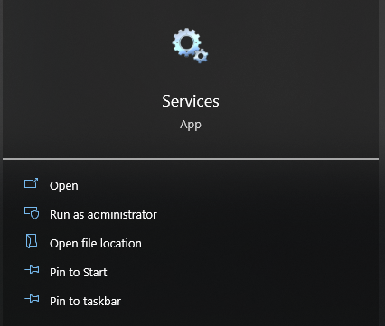
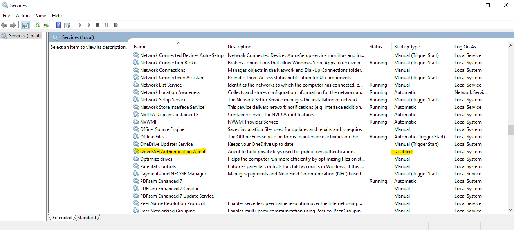
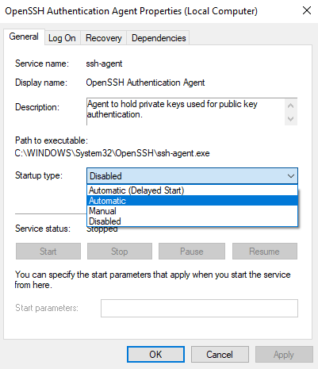
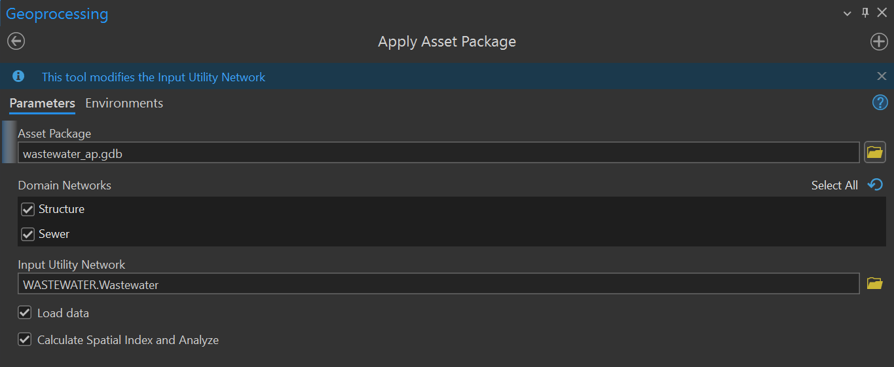

GIS Documentation Overview
This page is under construction.
Addressing Manual
Employee documentation for the City addressing process
- Address Requests
- Address Notification
Process Summary
- An Address Request Form arrives in the GIS office inbox.
- The form includes a current address for the taxlot parcel under development.
- The site plan indicates the number and location of partitions or subdivisions of the parcel.
- Assign address numbers to each partition or subdivision following the guidelines in the municipal code (GPMC).
- Open the Building Addresses layer in ArcPro.
- Create new points in the Building Addresses layer at each lot indicated in the site plan.
- Enter the address information into the attribute table of each new point.
- If replacing the existing site address, mark the old address as retired.
- If the site plan includes a proposed new road or road extension, add a line to represent the centerline into the Proposed Streets layer.
- Use the map template in the Layout tab to export an Address Notification Map of the new addresses.
- Complete a Tentative Address Notification form.
- Use the Address Notification Form template in "G:\GISUserProjects\Departments\GIS_General\Addressing\Address Request and Notification Forms".
- If there are too many new addresses to fit on the notification form, use the Excel file "Additional Addresses.xlsx" to record the overflow.
- Open a new tab and label it to match the Address Notification.
- Record the overflow addresses and export the tab as a PDF.
- Attach the overflow page to the Address Notification in Bluebeam Revu.
- Attach the Address Notification Map to the Address Notification in Bluebeam Revu.
- Email the Tentative Address Notification to the developer contact listed on the Address Request Form.
- cc the planner whose initials are under the planning box checked in the "For Staff Use Only" section of the Address Request Form.
- If the site plan includes a proposed new road, cc the public safety team.
- Obtain the current public safety team group email list from the GIS Coordinator.
- No need to cc the public safety team for road extensions, only for new roads.
Address Request Form
Check the inbox located adjacent to the entry door of the GIS office regularly for new Address Request Forms. Developers submit Address Request Forms prior to or concurrent with seeking a new building permit. For the City of Grants Pass, it is likely that new development occurs either within city limits or the urban growth boundary, meaning that the county assessor's office has already assigned the land a map tax lot, and the city already has an address associated with this property. Developers apply for new addresses when dividing an existing property into two or more smaller lots, requiring unique addresses for service by the post office, utility companies, and emergency fire and medical services.
Location of the Template Form
The template Address Request Form is located on the O drive at "O:/GISUserProjects/Departments/GIS_General/Addressing/Address Request and Notification Forms/Address Request Form.pdf". Front desk staff keep copies of the Address Request Form in a file cabinet behind the service desk, including a clean copy used to print more copies. If you update or change the Address Request Form, bring a new copy to the service desk and remove outdated copies from the file cabinet, so staff distribute the correct version to the public.
Checking Incoming Forms
Before processing an Address Request Form, check to ensure the form is complete, including:
- A date stamp showing when we received the document.
- A payment stamp showing that we have received the addressing fee.
- Contact information, including the name of the developer, their address, phone number and email. Do not confuse the contact address of the developer with the site address under development, they are not always the same.
- A signature from the site owner.
Additional form information:
- Minor or Major Address Request
- This field indicates whether the developer is partitioning the existing lot (dividing the lot into three smaller lots or fewer), or subdividing (splitting the lot into four or more smaller lots).
- Reason for Change
- The primary reason for new addressing is for new construction. Development inside the Urban Growth Boundary occurs on pre-existing lots recorded by the county assessor's office, but previously undeveloped lots may not have address assigned, and the form provides an "Other" field for unanticipated circumstances.
- The Assessor's Map Number field specifies the map tax lot number assigned by the county assessor's office. This field may be left empty when the form lists an existing site address in the City records.
- The Existing Address field lists the address assigned to the lot under development.
- The Lot(s) Located field records whether the lot under development is within the Urban Growth Boundary or the City Limits.
- The New Street Name Proposal field indicates whether the development includes the construction of a new street.
- New street names require approval of the public safety team.
- Extensions of existing roadways do not need to be listed on this field.
- This field may remain blank if the development includes no new street construction.
- The Site Plan Attached field indicates whether the attached map is a site plan. Subdivisions require a site plan, but partitions may substitute less formal maps indicating where the developer desires new addresses (such as a re-vegetation plan map).
Site Plan Map
Attached to the Address Request Form is a map showing the tax parcel under development. This map is typically a site plan, and will show the full boundary of the original tax lot, with additional lines showing the proposed partition or subdivision with numbered lots. Each new lot will need an unique address corresponding to the primary access road serving the parcel. Site plan maps are preferable for assigning addresses, because they indicate the location of driveways, making it easier to determine the primary access road. If the map attached to the Address Notification Form is missing or does not have adequate information to determine the number and location of addresses to assign, or the corresponding primary access road for address, bring this concern to the planner working with the developer (their initials are in the area marked "For Staff Use Only" under the box marked Planning).
Chain of Custody
When you have confirmed that the Address Request Form is complete and includes an adequate map of the site, check the GIS box in the "For Staff Use Only" area and initial the line below the box. In the future, if staff have any questions regarding the addressing for this site, they will know who processed the Address Request Form and can seek information from the appropriate staff members.
Records Retention
After initialing the Address Request Form, scan the complete form (the page containing the date stamp, initials and payment stamp, but not the attached site map) and save the form on the O drive at "O:/GISUserProjects/Departments/GIS_General/Addressing/Records/". Retain the hard copy for six months in the GIS office, after which time it is appropriate to shred the originals, provided an electronic copy is present on the O drive for archival purposes.
The Addressing Layer
The City of Grants Pass stores addresses in an Enterprise Geodatabase Feature Class that is stored on the OUTRIGGER server, called "SDEPublic.GPGIS.land_SITEADDRESSPOINT", referenced by planning staff, utility works, commercial utility providers (like internet companies), as well as emergency fire and medical services. City staff access this data using the layer file at "O:/Layer Files/Addresses/Building Addresses.lyrx". The GIS office maintains and updates the address layer using an ArcGIS Pro project stored on the O Drive at "O:/GISUserProjects/Departments/GIS_General/Addressing/Address Editing and Mapping.aprx". This project includes the following layers:
- City Limits
- Urban Growth Boundary
- Proposed Streets
- City Streets
- Building Addresses
- Service & Annexation Agreements
- Taxlot Parcels
- Aerial Imagery
The City Limits and Urban Growth Boundary layers help to orient users when finding new site locations, and the Address Notification Form has a field identifying whether new addresses fall within these boundaries. The Proposed Streets layer is a draft layer the GIS staff use to portray new streets and extensions proposed on development site maps. When an address request includes a new street or extension, staff create a line on this layer to represent the proposed street on the Address Notification Map. The Proposed Streets layer is not a part of the formal creation process for the city streets map, and does not have any application outside of the addressing process; its only purpose is to help produce address notifications.
The City Streets and Building Address layers use the official city database of streets and addresses. When you update the address layer, saved changes update the address feature class in the Enterprise Geodatabase, becoming immediately available to city staff and emergency responders. The building footprints layer offers outlines of existing buildings, which can be useful to delineate the locations of addresses. However, new development will often not have assigned footprints in the building footprints layer, and so will not be useful when making the Address Notification Map. If the building footprint, city limits, urban growth boundary, or proposed streets layers are not in use, turn off the layers by unchecking their boxes in the contents pane so they do not appear in the legend of the Address Notification Map.
For developments within the Urban Growth Boundary but outside the City Limits, properties that access city water and sewer services will enter into a service and annexation agreement with the city for these services. The Service and Annexation Agreements layer shows areas where these agreements are in place. This layer may also be turned off when not active on the Address Notification Map. The taxlot parcels layer shows the cadastral tax map of properties maintained by Josephine County. Address assignment often occurs prior to final approval of taxlot subdivisions, so while we will initially record addresses in association to the parent taxlot, GIS staff will need to later update these points in the layer with new taxlot numbers after the county has approved the subdivision and updated the taxlot layer, assigning each lot in the subdivision a unique map taxlot number.
The 2019 aerials layer provides the most recent available orthography of the city to help orient residents and staff viewing the Address Notification Map. As new aerial imagery becomes available, feel free to update the addressing layer to the new imagery, or to substitute the aerial imagery layer from the ESRI basemap gallery, whichever is more recent. Even recent aerial imagery will often not show buildings at the locations of new addresses, when the location reflects new development.
Addressing Subdivisions
- Use the civil drawings to pull the lot lines.
- Import the civil drawings (.dwg) into ArcPro.
- Select the lot lines and export to the project geodatabase.
- Trace polygons around the lots if needed (the civils will probably be in line format, not polygon)
- Calculate the geometric centroid of the polygons.
- Create a "lot" field and record the lot numbers used by the engineer.
- Use the centroids to assign parent addresses to lots.
- If we lift building footprints from the civils, the centroids can serve as address points for structures.
Addressing Rules
Chapter 6.40 of the City of Grants Pass Municipal Code specifies rules of address numbering. Please review this chapter prior to assigning new addresses to the city. Although the section below summarizes the rules as they exist currently, the City Council may update and revise the municipal code over time. If there is any conflict between the guidelines contained here and the current city code, please observe the municipal code and update this documentation to be consistent with current policy.
Cardinal Prefixes
Municipal code 6.40.030(B) requires the addition of cardinal prefixes to new city streets. When a subdivision includes a new street, developers submit a proposed name for the street listed on the site plan. As part of the addressing process, the GIS office creates a line in the Proposed Streets layer representing the proposed new street and assigning the street a name. The public safety team then reviews the name to ensure it is unique within the city and does not conflict with any prior street names. If the proposed name does not include a cardinal prefix, then assign the correct prefix to the proposed name prior to addressing the subdivision. The Southern Pacific Railroad tracks serve as the divider between north and south designations, and the center line of 6th Street and Orchard Avenue serves as the divider between West and East designations. All new streets should receive either NE, NW, SE or SW as a prefix depending on their location relative to these dividers.
If the developers are proposing an extension of an existing road, then the prefix should match the current designation of the road. Former county roads adopted into the city may not have a directional prefix, as well as city streets adopted prior to the referenced language in the municipal code. Once a street begins serving addresses, city staff are reluctant to change the name of the road by adding a directional prefix, as this would change the existing addresses of current residents.
Even and Odd Numbers
Municipal code 6.40.020(A) specifies the use of even numbers on the north and west sides of the street, and the use of odd numbers on the south and east sides of the street. Some pre-existing addresses in the city do not adhere to these guidelines, so be cautious using surrounding addresses to orient yourself if you are directionally challenged. If the street runs generally north to south, assign even address numbers to addresses on the west side, and odd numbers to addresses on the east side. If the street runs generally from east to west, assign even addresses to the north side and odd addresses to the south side. For roads that turn 90 degrees or more, such as a loop, change the numbering scheme to reflect the change in orientation at the sharpest point in the turn.
Oregon Fire Code 505.1 requires address numbers to consist of either Arabic numbers or alphabetical letters.
Block Numbering
Numbering should increase by one hundred every city block. Numbers should increase in increment heading away from the city center, as set by the divider streets that define the cardinal prefixes. So if the location is west of 6th Street or Orchard Avenue, then the street numbers should be increasing as they proceed west, whereas east of 6th Street or Orchard Avenue, street numbers should be increasing as they proceed east. Likewise, street numbers north of the Southern Pacific Railroad tracks should increase as they proceed north, whereas south of the Southern Pacific Railroad tracks street numbers should increase as they proceed south. Even if there is an adequate numeric interval in the numbering scheme to accommodate the additional address assignments without advancing to the next hundred block, a new hundred block should begin at each city block, or at each interval sufficient to accommodate a city block, even if no intersection is yet present. Emergency providers expect street numbering to increase by intervals of one hundred every block extending outward from the city center, and use this progression to help orient themselves as they respond to emergency calls.
Street Names
Street names should be unique within the County to disambiguate address locations for emergency responders. Although there are examples within the city of streets having the same name but differing types (such as Sunset Way, Sunset Ave, Sunset Ct and Sunset Dr), it is no longer City policy to allow streets of different types to share the same name, and each new street requires a unique street name. The County maintains a list of street names, and our office uses this list as a domain restriction on the street name field in our addressing layer. When assigning new street names, a member of the public safety team associated with County transportation should check the proposed name against the pre-existing domain of street names before approving the new name. After approval, you may add the name to the domain list of street names on ArcGIS. The use of a domain for street names prevents the assignments of misspelled or invalid street names to new addresses, and facilitates address comparison with the County.
Historic Exceptions
As you become familiar with the addressing rules specified in the municipal code, current existing addresses may catch your attention as being out-of-compliance with these rules. Some may predate the rule in question, or may even be carelessly assigned by a previous member of staff. But once assigned, city staff are reluctant to reassign existing addresses unless there is a pressing public safety issue. When assigning new addresses, be careful to properly orient relative to the city center using the defined divider streets, and do not rely solely upon the context of surrounding addresses to determine the numbering pattern. New addresses should be consistent with current policy in the municipal code, even if this comes at the expense of consistency with historic exceptions in the surrounding sites.
Addressing Policies
By necessity, this section serves as a companion piece to the Address Standards (Ch. 6.40) of the GPMC. Address policies refer to a set of guidelines and best-practices that describe how to follow the rules in the code. By adhering to these policies, staff can enforce the municipal code in a manner that is fair and consistent over time and with different residents. However, to the extent that these policies represent a set of heuristics, unusual cases may arise that challenge their application. Since these policies are not set into the municipal code, staff have more flexibility to handle special cases, and management may elect to change a policy or discontinue a policy if appropriate. This is in contrast to the language of the municipal code, which is approved by council action and may only be changed through the same process.
The format follows the language of the Address Standards chapter, because the code uses concepts defined in earlier sections to define more complex concepts in later sections. Those portions of the chapter that discuss issues unrelated to address assignment, such as requirements for the display of address identification at the property, will not receive further discussion here.
Scope
The first paragraph of section 6.40.010 describes the scope of city responsibility related to addressing, and among the six items only the first and second are the direct responsibility of the GIS Division:
- Determine address assignments within the City.
- Produce and maintain a database of assigned addresses and a map of their locations within the City.
As the local municipality, we become responsible for assigning addresses within the area we claim as our City Limits. As the authority of record regarding our addresses, we are obliged to maintain a database of valid addresses, and a map of their locations, so that other agencies, businesses and individuals can determine which addresses are legitimate. Key agencies that rely on our address records include the USPS, Josephine County and Emergency Communications of Southern Oregon, while private businesses include Pacific Power, Avista Gas, Southern Oregon Sanitation and Republic Services. Among our own departments, addresses are the nexus of organization for building permits, planning agreements, and utility billing, but the most time-sensitive and urgent use is for emergency dispatch and response.
In the past, the city would maintain a literal map of addresses, but today we provide an ArcGIS mapping service, and make our address map available to the public on the City Web Viewer. It is important to remember that providing access to this map for the public is a regulatory obligation.
The Assignment Criteria in paragraph 1 specify the circumstances under which we are obliged to assign an address to a location:
- Individual tax lot parcels shall have at least one unique address.
- Buildings, or areas within buildings, shall have unique addresses when they are:
- a separate residence,
- a place of business that serves customers, or
- receiving mail, package deliveries or utility services.
- Developments with multiple buildings shall assign each building a unique identifier.
To understand the motivation for these criteria, it is helpful to reflect on what has occurred in the past in the absence of these requirements. Partition and subdivision of parcels has been a common occurrence within the Urban Growth Boundary. When partition occurs, the county assessors will often increment the lot number by single digits for the newly-created lots, so the lot identifiers are unique. But if the new lot did not receive an address assignments, the assessors would enter the parent address of the original parcel as the situs address of the new lot. For instance, the owners of the property at 2494 Hamilton Lane partitioned off a portion of their land, and since then both properties have been sold to new owners. For the new owners of the original parcel, this process worked normally. But the owners of the newly-created parcel ran into some problems.
The situs address associated with the new parcel was still 2494 Hamilton Lane. When the owner searched for this address on the Josephine County property map, the site identified the wrong/old parcel, because it was also associated with this address. If the owner wanted to sell the property, the lack of an address made it difficult to market. The cause of this predicament is that the land was undeveloped, so no one ever applied for an address. Now, we require an address assignment for all newly-created taxlots, so that all tax parcels in the city have a unique address associated with them. This avoids confusion and difficulty for residents dealing with undeveloped lots. As a happy ending to this story, the undeveloped lot now has a situs address of 2620 Hamilton Lane.
Some parcels do not have situs addresses associated with them at all. For instance, the parking lot that extends over parcels 360517CB004900 - 5200 contains four parcels all registered under a situs address of "* SE G ST". Today, each of these parcels would receive an address that would serve as the parent address for the parcel, preventing confusion down the line when someone tries to sell or develop the parcel.
For addressing buildings, every unique occupancy receives an address to facilitate emergency response. Over the decades, emergency response has increased the level of detail that they request in address assignments. Where they might not have required each occupancy to receive a separate address in the past, today they will ask for a floor number associated with each occupancy (in some extreme cases even a room or a seat identifier). We have codified these requirements into the municipal code so that addresses in new development conform to our emergency response standards.
We require unique addresses for each separate residence, and we also require addresses for businesses that serve customers. If a resident conducts a business from their home, they do not require a separate address if they are not serving customers, but may be interested in acquiring a business address to facilitate deliveries, set up utilities in the business name or to distinguish an area as business space for tax purposes.
Finally, we require addresses for buildings where the property owner would like to receive mail, package deliveries or utility services. This is often enforced by the agencies and companies delivering the service. For example, we have received calls from residents asking for an address because they want to add internet access, but the internet company refused to hook up service without a valid associated address. The Post Office will also turn away residents requesting mail service if the address is not in their records, so even if a building does not count as a "separate occupancy", it still may require an address, depending on the intended use of the space.
If the building is part of a complex, such that utilities are shared, a single address number may be sufficient to serve the property, but each building will still need to receive a unique identifier. Examples of this include the Holiday Garden Apartments at 1051 E Park St, which consist of 124 apartment units among 18 buildings. Each building takes the parent address of 1051 E Park St, with a building identifier (A-R). The business complex at 2001 NE Foothilll Blvd includes seven buildings with identifiers A-G. This requirement facilitates emergency response. In a large complex, knowing the building identifier can help responders to choose the appropriate point of access, and avoid unnecessary delays in finding the building.
In practice, residents or developers will typically request an address in the process of working with a planner. It is the planner who guides the process and informs when an address request is necessary. In the GIS Office, we wait for an address request form to appear in our inbox, and often have no direct contact with the applicant. It is important to discuss address assignment criteria with the planners in Community Development, to maintain awareness of what circumstances should trigger an address request when working with an applicant, especially during periods of turnover.
Assignment of Street Names
If a development includes a new street, the proposed street will be identified on the site plan submitted with the Address Request Form. New street names require the approval of the City Manager, the 911 Operations Manager and the Fire Marshall, acting through their designees. Tentative address assignments go to a mailing list including the 911 Operations Manager and the Fire Marshall, in order to solicit their approval. The GIS Office and you will be representing the City Manager when approving street names, so it is important to carefully consider the requirements in 6.40.020 before granting approval to these applications.
The spelling of the street name as recorded in the final plat constitutes the official name of the street. Changing the official name of a street requires an act of council. Given these constraints, it is much easier to catch and deny an inappropriate street name during the application process, compared to the effort required to change a street name once it has been released out into the wild.
The language of 6.40.020 (A) includes a number of specific prohibitions, such as denying punctuation, special characters, accents or diacritics, as well as offensive or derogatory terms. During my tenure, I have not seen any requests for street names with acute or grave accents, diacritics or emojis, but some requests have included punctuation (an apostrophe). Inclusion of special characters is problematic because not all agencies have the capacity to manage special characters in street names. The likelihood is increased that different agencies will record the address differently (with or without the apostrophe), which can make coordination between agencies more difficult. The computer-aided dispatch (CAD) system used by emergency response is currently not equipped to handle special characters, which is a sufficient reason alone to deny special characters in street names.
The decision of whether a name is offensive or derogatory may be subjective. Some words are unequivocally inappropriate, such as profanity or racial epithets, but other names may appear to fall in a gray area. If you feel compelled to deny a proposed name due to potentially offensive or derogatory interpretation, do not make this decision in isolation. Lean upon the other members of the group responsible for approving new names, including the designees for the 911 Manager and the Fire Marshall, and try to obtain a consensus for denial from the team. This protects our organization from the perception that our staff is making decisions capriciously or arbitrarily, when that decision requires the exercise of subjective judgement.
Street names are not allowed to duplicate existing names in the registry of official street names maintained by ECSO 911. The reference to the official street names registry maintained by ECSO 911 is a subtle but intentional reference to an organization outside the City of Grants Pass. This is because currently Josephine County and Jackson County have a shared emergency dispatch service (ECSO 911). The official street names registry includes street names from Jackson County. Because we have a shared dispatch system, if the City of Grants Pass duplicates street names in use in Medford, these Medford streets will also appear in dispatch searches for addresses on this street, making it more difficult to identify the correct location in an emergency.
An initial draft of this language referred to "street names in Josephine and Jackson counties", which was rejected out of the logic that street names in Josephine County should not depend explicity on street names in Jackson County. Instead, by clarifying that duplication cannot occur within the registry of street names maintained by our emergency response provider, it becomes clear and apparent why street names in the City of Grants Pass cannot duplicate those in Jackson County. It also leaves the door open in the future, if we change our emergency dispatch arrangement with Jackson County, to loosen the prohibition on duplicating names in Jackson County, without needing to change the language of the code.
Duplicate street names create ongoing issues for emergency response. In Grants Pass, we have three streets named "Sunset": Sunset Way, NW Sunset Drive and NE Sunset Lane. The streets are on opposite ends of town, more than a mile and a half from each other. When residents call 911 to report an emergency, they may identify the street as "Sunset" and require clarification. A mistake will send the responder to the wrong end of town. These issues are avoidable by preventing duplication of street names.
Bullets i-iv of item c in 6.40.020 (A) identify circumstances under which our office may deny a street name. As in the case regarding potentially offensive or derogatory names, decisions related to these bullets involve a degree of subjectivity. If you plan to deny a proposed named based on this criteria, it would be wise to gain the consensus of staff instead of acting unilaterally. For instance, "similarity to existing names" requires staff to make a determination of when a name is "too close" to another. Likewise, "difficulty in pronunciation" is not only subjective, but will vary from person to person based upon elements like cultural context. This language is designed to give staff the authority to deny names that are potentially problematic, while providing the latitude to accept names within a reasonable range of options.
Note that "similarity to existing names" can refer to naming patterns among sets of streets. For instance, a developer attempted to name a private street intersecting NE 9th St as "NE 53rd Ln". The use of "53rd" proved problematic for emergency dispatch because we currently use numbered avenues running north-south throughout the city center. The proposed "NE 53rd Ln" would run east-west, instead of north-south, and would be located between 9th and 10th avenues. In this case, the similarity of the name to the numbering scheme already in use makes it inappropriate, although there is nothing problematic about the street name taken in isolation. Breaking the existing numbering convention, both in the ordering and the alignment, creates confusion based upon its similarity to the existing numbered streets, by failing to adhere to the existing pattern.
Currently, staff do not have tooling or procedures for checking "similarity" of a proposed name to existing names. Staff check for explicit duplication, but treatment of potentially similar names is essentially ad-hoc. Lacking sophisticated tooling or clear objective standards for quantifying similarity, the language in the code leaves the discretion to staff as to how stringently to enforce this requirement.
Abbreviations, acronyms and initials are prohibited to prevent ambiguity. When a name includes an abbreviation, acronym or initials, people are more likely to include periods and other "noise" characters when writing out the address, making it more challenging to reconcile records from different sources. People reporting the street name over the phone to dispatch may expand the abbreviation, adding to confusion in identifying the street. Note that "MLK JR BLVD" would be unsuitable because MLK are initials and JR is an abbreviation, while "MARTIN LUTHER KING JUNIOR BLVD" is potentially too long to fit on a street sign. The intent of the language is not to deny our city the opportunity of honoring a celebrated civil rights leader, so there is an argument that this language is perhaps overly restrictive.
Street names may not contain a Cardinal direction (north, south, east, west, northeast, northwest, southeast or southwest). The reason is that street names may include a directional prefix indicating the general location of the street relative to the city center. If the street name can be mistaken for a directional prefix, this creates the potential for confusion and delay in emergency response. For this reason, we also reserve the right to prohibit street names that contain a Cardinal direction as a component (such as Northstar). You can imagine a dispatch operator trying to determine if an emergency is occurring at "N Star St" or "Northstar St", and this is the sort of confusion we intend to prevent.
Combining a numeric name with an alphabetic name is prohibited to prevent confusion between the street name and the address number. This is an edge case that has not come up during my tenure. The language comes from the municipal code for Roseville, CA.
When an address request includes a proposed street name, then we share the request with a contact list of staff designated to inspect and approve new street names. This list includes the designated representatives for the 911 Manager and the Fire Marshall, as well as a member of the streets division. The member of the streets staff will inform you if the proposed name is too long to fit on our street signage. Letters have minimum size requirements set in the Manual on Uniform Traffic Control Devices (MUTCD). However, because individual letters vary in width ("I" being skinnier than "M" for example) staff did not feel comfortable setting a hard character limit for street names. After trying a few tricks to fit the name on the sign, the streets staff will inform us if the proposed name is too long, and we will pass this information along to the applicant, so they can choose a new name.
While the lettered items of 6.40.020 (A) are designed to prevent naming conflicts among streets, the numbered items 1-6 are designed to maintain the continuity of streets across multiple developments. Item 1 specifies that a street will have only one name throughout its length. Streets are not allowed to change names midway along their length because of the confusion this could cause, both in emergency response and basic navigation. The exception to this rule applies to roads that meander in alignment, often in response to local topography. When a road changes alignment, such as from north-south to east-west, it is permissible to change the street name at the inflection point of the alignment change.
Although this rule is intended to allow changes in alignment between north-south and east-west directions of travel, the code permits a name change upon a directional change of 45 degrees or more, to accommodate sections of the city grid that do not run strictly north-south or east-west. For instance, the numbered avenues in the city center observe a generally north-south alignment, but in fact are skewed east 23 degrees, while the east-west aligned streets are aligned straight east-west. The resulting angle of intersection between an avenue and a street downtown is 67 degrees. If we required a directional change of 90 degrees or more to permit a name change, then we would not be able to apply this rule to any downtown streets. The selection of 45 degrees as the threshold was intended to allow additional flexibility regarding intersections on non-standard alignments. While a street may receive a new name upon a change in alignment, it does not need to receive a new name. There are several examples of existing streets that maintain a single name throughout several changes in direction, such as Cloverlawn Dr, Fruitdale Dr, Harbeck Rd and even Poplar Dr, just to name a few.
If the new proposed street functions as an extension of an existing street, it should take the name of the existing street. Even if there is existing development blocking the existing street from connecting to the proposed street, the proposed street may still be considered an extension of the existing street if it is possible to connect the portions sometime in the future. In practice, this is a difficult determination to make, and often is contextually dependent on a time frame. If the development blocking connection of the streets is relatively new, you may reason that connection of the streets is unlikely to happen during your lifetime, and safely defer the problem to a future generation. But if the development is aging and rife for redevelopment, it may be prudent to insist that the proposed street take the name of the existing street, so that the two can connect if the area is further developed.
Similar to the rule that new streets shall take the name of the existing street on which it aligns, the rule that street names shall continue across intersections and roundabouts is designed to preserve the continuity of the city grid across multiple developments. If a new street functions as an extension of an existing street by continuing the direction of travel across an intersection or roundabout, then the new street shall take the name of the existing street. By explicitly listing these requirements in the municipal code, we make it clear to developers the circumstances under which a new street may take the name of existing street.
The treatment of cul-de-sacs is varied across the different municipal codes we surveyed during the drafting process for our code. Some cities allow developers to place cul-de-sacs along a segment of street that take the name of the connecting street. Apparently, because these cul-de-sacs are not large and do not encompass very many properties, staff in these cities are comfortable with the cul-de-sac sharing the street name with the intersecting street. Here that is not the case, and a cul-de-sac branching off of a street will need to have a unique street name. However, if a street terminates in a cul-de-sac, then the cul-de-sac takes the name of that street.
The street name for commercial developments served by more than one public street shall correspond to the public street carrying the higher traffic volume.
Large commercial developments often have multiple access points, with parking lots that connect to two or three local streets. In these cases, the address takes the street name of the connecting street with the highest traffic volume. The street bearing the highest volume is typically the primary access for emergency response. As an added bonus, associating the business address with the higher-volume street can often make it easier to find for customers.
The street name for addresses within a manufactured or mobile home park shall correspond to the public street it fronts, with each home having a space number.
The language for this portion comes from the City of Medford (Section 9.571). Given the large number of spaces that a mobile home park can accommodate, unique address numbers for each space are often not possible, so this restriction seemed reasonable. By sharing a parent address, it is clear which park the unit belongs to, and we avoid duplicating space numbers within the park. Note that the code specifies the address type as "Space". Also, as a critique, the language should refer to a "space identifier" rather than a space number. While it is reasonable to use letters as a space identifier, technically the code requires a number due to the language choice. This is a case where I failed to correct the wording of code that I copied from another municipality, as "identifier" is used throughout the rest of the chapter.
The City shall assign a directional designation to new streets. The main line of the Southern Pacific Railroad serves as the divider between North and South designations, and the center line of 6th Street and Williams Highway serves as the divider between west and east designations.
Enforcement of this provision is straightforward and simple. When you receive an address request form with a proposed street name, the new street must include a directional designation. If the developer forgets to add one, it is acceptable to add the directional designation and inform the developer that the change is in accordance with GPMC 6.40.020(B) on the Tentative Notification. The developer has opportunity at this stage to request changes before the address is finalized, if they so desire. The requirement that new streets receive a directional prefix dates back to 1950 in this city, but the standard was not consistently enforced over time, so many streets fail to adhere to this requirement. Bearing this in mind, be vigilant and ensure that none slip through the cracks on your watch.
If the street that serves as primary access for a property has a directional prefix, the address assigned to the property will also take the prefix as part of the complete street name. If the street name does not include a directional prefix, then do not add one to the address.
Each street name shall include a suffix type from the list of recognized street suffix names in Appendix C1 of the United States Postal Service (USPS) Publication 28 - Postal Addressing Standards.
Enforcement of this provision is also straightforward. Appendix C1 delineates 231 recognized street suffix names. If the proposed street name is missing a street type, or if the type does not match one of the recognized types, you cannot approve the name.
There are conventions related to assigning street types, largely informal or local in nature. For instance, "Lane" and "Way" may be reserved for local streets, whereas "Avenue" is more appropriate for a collector or arterial. However, practically speaking, developers are not in the habit of asking the GIS Division what type to assign to proposed streets. Typically they will propose, and your primary responsibility will be to accept or deny. If the type name is on the list of recognized street suffix names, this is sufficient to accept the type designation. Our office does not enforce conventions related to the use associated with a street type designation.
The FGDC standard classifies the street name post type as optional, whereas in our code it is required. There is a bit of history here unrelated to the existence of single name streets like "Broadway". The county uses a subset of appendix C1 as their list of recognized street suffix names, including 27 options. When developers submitted new street names using type that are included in appendix C1, but not within the county subset, the county classified the street name post type as part of the street name component.
For context, the FGDC standard defines a Complete Street Name as consisting of the following components:
- Street Name Pre Modifier
- Street Name Pre Directional
- Street Name Pre Type
- Separator Element
- Street Name
- Street Name Post Type
- Street Name Post Directional
- Street Name Post Modifier
Among these elements, only the street name is required. When we reconcile address databases with the county, we compare the values in the individual components against each other. So even if the complete address looks identical, the matching process can fail if the city and county have parsed the complete street name into different constituent components. For instance, the city classifies the complete street name "SE Formosa Gardens" as consisting of three components: a street name pre modifier (SE), a street name (Formosa), and a street type (Gardens). Whereas the county records the same street using two components: the street name pre modifier (SE), and the street name (Formosa Gardens), leaving the street type as null. Within the City, we do not have any single name streets, and in every case where the county assigns the street type as null, the street name includes a valid street suffix name from appendix C1 as part of the street name component.
Part of the motivation for this standard is to establish a consistent policy for managing the presence of valid street suffix names in proposed street names. Consistent classification of street name components makes it easier to compare addresses between agencies. As mentioned previously, our emergency dispatch services are combined with Jackson county, so the actual address database that dispatch uses is maintained by ECSO 911, with our addresses serving as a source. When we issue a new address, staff at ECSO 911 add the new address to their database, but no process was in place to reconcile our records. Over the years, small differences in the records had accumulated until there were hundreds of discrepancies between our agencies.
These discrepancies periodically caused delays in emergency response. Many of these delays were preventable by systematically comparing the ECSO 911 database against our own, and correcting inconsistencies before an emergency response situation occurs. One could argue that the responsibility rests equally upon ECSO 911 to ensure fidelity between our two records, but in reality the onus lies upon our office, because we have more to lose if our addresses are not correct in their system. After all, it is our city and our residents that are negatively impacted. Avoiding those potential negative impacts is our responsibility. Therefore, we periodically reconcile our address records against ECSO 911, and largely they rely upon us to provide this function.
Change of Street Name
The City may change the directional designation of a street. The City shall provide written notice of the proposed change to owners of property fronting the street 30 days prior to any change, and upon enactment of the change. The City may change a street name or type designation according to the process described in ORS 227.120. In addition to the provisions of the statute, the City shall provide written notice of the proposed change to owners of property fronting the street 30 days prior to any change, and upon enactment of the change.
The spelling of the street name as recorded in the final plat for a new development constitutes the official and legal name of the street. This includes all components of the complete street name, including the directional prefix and the street type. The process for changing a street name is constrained by ORS 227.120, and it is germane to this discussion to review the text in full:
Within six miles of the limits of any city, the commission, if there is one, or if no such commission legally exists, then the city engineer, shall recommend to the city council the renaming of any existing street, highway or road, other than a county road or state highway, if in the judgment of the commission, or if no such commission legally exists, then in the judgment of the city engineer, such renaming is in the best interest of the city and the six mile area. Upon receiving such recommendation the council shall afford persons particularly interested, and the general public, an opportunity to be heard, at a time and place to be specified in a notice of hearing published in a newspaper of general circulation within the municipality and the six mile area not less than once within the week prior to the week within which the hearing is to be held. After such opportunity for hearing has been afforded, the city council by ordinance shall rename the street or highway in accordance with the recommendation or by resolution shall reject the recommendation. A certified copy of each such ordinance shall be filed for record with the county clerk or recorder, and a like copy shall be filed with the county assessor and county surveyor. The county surveyor shall enter the new names of such streets and roads in red ink on the county surveyors copy of any filed plat and tracing thereof which may be affected, together with appropriate notations concerning the same. The original plat may not be corrected or changed after it is recorded with the county clerk.
Takeaways from this text:
- Changing a street name requires council action.
- The council cannot change the name of a county road or state highway.
The constraints that this statute places on our municipality depends on the meaning of the term street name in the text. Does street name refer to the fully-qualified FGDC complete street name, including all components, or does street name refer to just the "street name" component of the complete street name? Our code assumes the latter, and permits us to change the directional prefix or the street type without an act of council. The primary motivation for this text is to enable us to change the directional prefix associated with a street.
Consensus among staff is that changing the street name component would trigger ORS 217.120 and require an ordinance from Council. However, staff feel that changing the directional designation does not constitute a change of street name as described by the statute, and would not require an act of Council. Part of the reasoning here is that the street name and street post type function as a unique identifier, like a first and last name do for people. We have several streets with the same name but different post types, so both the street name and post type serve to guarantee the uniqueness of the street name. However, a directional designation can only take a specific value, either the quadrant designation set by the city grid or the existing directional designation of a street being annexed. The value is not arbitrary, like a name, but rather set based upon its orientation to the city center. Hence, a directional designation may be made present or absent, but its value if present cannot be changed. In other words, because the directional designation describes an orientation, as opposed to an identity, it does not comprise a part of the street name as referred to by ORS 227.120.
Prior to 2023, the municipal code did not contain language for changing street names. Therefore, this mechanism is still untested, but there are a set of problems related to historic street name assignments in the City that required this change in the text to address. Since 1950, the municipal code has required that new streets receive a directional prefix. However, city staff did not consistently enforce this requirement, so many streets created since 1950 did not receive a directional prefix. In some cases, the City failed to apply a directional designation, but the assessors office assumed one was in place, resulting in parcel situs addresses that do not match the addresses assigned by the City. In other cases, the City has consistently applied a directional designation but the assessors office has not followed suit.
In the case of Oakview Dr, our office recently added the addresses 1216 SE Oakview Dr Units A, B & C, and the assessors office inquired whether addresses on Oakview are supposed to have the SE prefix. Unless the City takes specific action to change a street name, the assessors office is obliged to use the street name as recorded in the final plat. We could not find a plat record for Oakview Dr (the best we could do is a bill of sale from the early 40s reserving the right-of-way for road purposes). Since we were unable to use the plat to prove the presence of a directional designation, the assessors office requested the City take specific action to adopt the directional designation, at which point they would change their records to match.
In the case of West Harbeck Rd, address numbers 269-709 (25 addresses) have parcel situs addresses of West Harbeck Rd, and address numbers 802-2001 (80 addresses) have parcel situs addresses of SW West Harbeck Rd (see Figure 5). The City does not recognize the SW prefix for West Harbeck Rd, considering West to be the directional designation and Harbeck to be the street name. The City needs some formal mechanism by which to declare that West is the official directional designation, and the assessors office will change their records to match.
Now that we have the regulatory authority to change the directional designation of a street, we can begin to tackle this issue. A naive solution might be to tackle issues as they arise, but this is an unsatisfying approach for a number of reasons. One concern is uneven enforcement. If we try to correct one address because of a specific issue, are we also correcting other occurrences of this issue? If not, enforcement is potentially unfair, and we could even open up the city to liability for acting in a discriminatory manner. Enforcement that is uniformly and evenly applied protects staff from the perception that their actions are capricious or arbitrary.
A second concern is prioritization. First-come/first-serve is an appropriate business model for a coffee shop, but not all address issues are of equal priority. Address issues that result in emergency response or personal safety concerns should receive higher priority in proportion to the perceived risk. Given the time and effort required to correct an address across multiple agencies, failure to prioritize serious safety concerns can significantly increase the risk of poor outcomes.
The resolution process also raises questions. What should the documentation of an address issue look like? If the address presents a potential safety concern, do we require a statement from emergency dispatch identifying the safety concern? The municipal code requires us to contact the resident in writing both 30 days prior to any change and after the change has occurred. The intent was to provide residents with a minimum assurance that they would be informed in a timely manner during the process, but we did not intend for it to be the whole of the process.
The Address Strategic Plan
The Address Strategic Plan is a document designed to organize, prioritize and focus on address issues. When you encounter a new address issue, record the issue in the appropriate section of the strategic plan. As a companion to the strategic plan, we keep a map layer showing the location of address issues, with links back to the appropriate sections of the strategic plan. The intent is to publish the strategic plan map within a web app, so that users who click on a particular feature can follow the link to the strategic plan and become informed on the issues affecting an address. Updating the strategic plan involves recording the address issue in the planning document, and then adding the points at issue to the strategic plan map.
Each address issue identified in the plan should include:
- An issue category.
- The address(es) at issue.
- A description of the issue.
If the issue does not fit into an existing category (access, suffixed, sequencing, or directional), then create a new category to hold issues of this type. For an existing issue, you will want to add the address of interest to the list of affected addresses, but you may not need to update the issue description, if it describes the issue sufficiently for the new address.
The project file for the strategic plan map is at O:/GISUserProjects/Departments/GIS_General/strategic_plan/addressing_strategic_plan/addressing_strategic_plan.aprx. The schema for the addresses in this layer is identical to the addresses in our normal addressing layer, with the addition of some extra fields. This design is an intentional choice, to make appending new issues straightforward. Because all the fields in the address site points layer are present in the strategic plan layer, we can append rows from the former onto the latter. So when I have identified an address issue, I select the points of interest and export them to the project geodatabase. Then I merge the exported layer with the strategic plan layer, producing a new layer with the merged contents, including the new addresses. I then have to follow up by filling in the three missing fields that are not present on the original layer. These fields are:
- Current address
- Issue type
- Issue link
The current address field contains the current state of the address, or the address at issue, and not the proposed change that would resolve the issue. When I merge new addresses into this layer, I copy the address label field into the current address field. The reason we copy the active address into this field is so that we can replace the values in the normal address component fields with a proposed new address that would resolve the existing issues. Once we have changed these fields to propose a new address, the current address field becomes the only field referencing the original address.
The issue type field is a domain with values corresponding to the four issue categories identified in the strategic plan. We use this layer to drive symbology and labeling in the strategic plan map. The issue link contains a link to the strategic plan document hosted in the documentation repo on the City's GitHub repository.
Why not just use an MS Word document? Isn't that how governments do it? The first motivation is to facilitate sharing. As a web book, we can link to each subheading in the document, so we can link to a subsection within a larger document and send readers to this exact section. We could potentially link to a Word document stored on one of our network drives, but we cannot link to individual sections within a Word document, and this makes it harder for users to find the content related to a specific issue. If staff are not on the city intranet, they will not even have access to the Word file, and if we decide to share the map with residents, the solution does not work at all. Sometimes agencies prefer using Word format because of the shared editing tools, but typically only a single member of the GIS division will be preparing and editing the strategic plan, so shared editing is not a motivating factor.
Address Assignment
From 6.40.030:
- Address assignments shall adhere to the National Emergency Number Association (NENA) standard.
- Record-keeping practices of address assignments in the address database shall adhere to the Federal Geographic Data Committee (FGDC) standard.
NENA is the organization that provides standards for 911 response in the US. There are two documents on their site relevant to GIS.
The NENA GIS Data Model:
The NENA standard projection for 2D data is EPSG::4326, and for 3D data is EPSG::4979. This can be helpful to know when reading in ECSO data. This document provides definitions for address components that correspond to the FGDC elements. Each of the FGDC address elements have corresponding components in the NENA standard. However, NENA includes additional fields that capture a higher degree of specificity. These additional fields include Building, Room and Seat. Our responsibility as an address authority is to ensure that all address assignments include a sufficient level of specificity to meet the CLDXF standard. Some elements of the standard are intended for ECSO personnel to maintain, such as the NGUID or different agency response zones. Although we are not expected to provide these additional elements of NENA compliance, it is our responsibility to ensure that address assignments are complete and correctly categorized, such that the PSAP can bring the address into compliance without seeking any further information from our agency.
The motivation for addressing individual rooms within hotels, suites within businesses, and apartments within multi-family residential is to provide the Building and Room fields for the CLDXF standard. Currently no addresses in Grants Pass use the Seat identifier. Examples from the document for seat identifiers include seat numbers within a stadium or theater.
Table 4-4 shows field names, description, types and widths for the site address points layer. For field name length, we have used the FGDC recommended field lengths, as opposed to the NENA standard. However, variances may occur, and if the width of a field was insufficient, we have expanded it as needed. I have not run into an occasion where the length of individual data fields caused a data interoperability issue, but it is good to be aware of the expected size of individual fields when exporting and importing data. Restricting an abbreviated pre-directional to a length of 2 is reasonable, because the values are constrained to "NW", "SW", "NE", "SE", "N", "E", "S" and "W". But if the directionals are fully spelled out, the field width needs to accommodate up to nine characters. This will only create problems on import if the target field is not wide enough to fit in the incoming data, so wider data types are more accommodating. But if other agencies are exporting our data, they can encounter issues if our data is wider than expected.
Both the FGDC and NENA standards offer recommendations for field names. I have not changed the field names in use on our address layer, but have added new fields to represent additional address components. Some field names are restricted, for example, Tyler ERP requires the address label field to be named FULLADDRESS. The important thing here is not to match the recommended field names, but rather to ensure all the component types referenced in the standard are present in our implementation, if they are fields that we could use for an address.
Development of Site/Structure Address Point GIS Data
- This is an informational document that discusses different methodologies for collecting site address point data. While this document does not present a set of regulations to follow, it offers an explanatory background for what we do and why.
- For address placement, we use the method "Placement of an Address Point Based on a Structure" (3.4.4) when the development includes buildings.
- Staff have followed Option 3, where the address point corresponds to the primary entrance of the structure.
- When there are no structures, we use the method "Placement of an Address Point on a Parcel" (3.4.2) with the Default option (the centroid of the parcel).
The FGDC sets federal standards for geospatial data. The address thematic subcommittee focuses on postal addresses. By adhering to the federal standard, we hope to facilitate interagency use of our address data. From the perspective of our small city, the FGDC standard and the NENA standard require a very similar set of information. As mentioned above, the NENA standard includes additional fields for Building, Room and Seat. Each of the address components identified in FGDC standard have corresponding elements in the NENA standard. It may have been sufficient to adopt the NENA standard, but our staff have historically worked from the FGDC standard.
In the municipal code, we specify that address assignments must adhere to the NENA standard, meaning they should include the address components specified in both standards, as well as Building, Room and Seat fields. Record-keeping practices in the GIS database refer to field names and widths of fields.
Currently we are working from the document FGDC-STD-016-2011. In particular, Part 2: Address Data Content, provides descriptions of each address component, as well as examples and some explanatory remarks. Compared to the NENA documentation, the FGDC standard is more thorough and detailed, and will provide a better introduction to the subject matter for the new technician.
If you have been clicking on these links, you are realizing that some of these documents are not short. The NENA GIS Data Model is 110 pages, and the informational companion document is 66 pages. Part 2 of the FGDC standard is 210 pages. And they are boring. Did I just tell you read these in their entirety? Yes. Please do.
Our address training material would have to be substantially longer if I had to include all the relevant material from these documents. When you are reading through a portion that is less relevant, keep in mind that you are learning how addresses are made and organized on a national scale, and how your role in a local municipality fits into this bigger picture. The structure of our database, and the methods we use to track addresses, are based on the FGDC documentation, so it is best to familiarize yourself with this standard. The FGDC standard also describes testing and validation strategies, some of which we could benefit by implementing here.
Directional Designation
The complete street address shall include any directional prefix assigned to the street name.
The directional designation of the address should match the official street name. As mentioned previously, many of the streets developed since the 1950s should have been assigned a directional designation, but were not. We are developing a test to identify addresses where the directional designation does not match the street name. It is fairly straightforward to determine if a new address assignment receives a directional designation, because the designation will match the new or existing street name.
Block Numbering
Address numbering shall increase by one hundred every city block. Numbers shall increase in increment heading away from the city center, as set by the divider streets or tracks that define the directional designation.
- For locations west of 6th Street or Williams Highway, street numbers shall increase as they proceed west of 6th Street or Williams Highway.
- For locations east of 6th Street or Williams Highway, street numbers shall increase as they proceed east of 6th Street or Williams Highway.
- For locations north of the main line of the Southern Pacific Railroad, street numbers shall increase as they proceed north of the main line.
- For locations south of the main line of the Southern Pacific Railroad, street numbers shall increase as they proceed south of the main line
- When assigning multiple units to a single tax parcel
- Use unique address numbers when the units are detached from each other.
- Use unique unit identifiers when the units are attached.
- Retain the parent address when assigning multiple units to a single address number.
Address Verification
Address verification refers to the process of ascertaining the validity, accuracy and completeness of our address database.
Validity
Is the address part of an approved use for the property?
When an address is for new development, the planner will approve the use of the property prior to requesting assignment. Establishing validity is more involved for older properties and existing addresses. Converting a pre-existing building to expand occupancy requires approval from a planner, and the presence of addresses in use that are missing from our address records can indicate the presence of addresses that were not properly permitted. For existing addresses, the planner will determine if the use is approved. It is acceptable to add an address approved in this manner to our records. When adding a pre-existing address to our records, we may waive the addressing fee in the interest of bringing our records up to date with existing conditions.
Accuracy
Does the address record match the displayed identification of the address in daily use?
Street imagery is the easiest way to verify the displayed identification on a structure. Google street view and Bing use independent imagery databases, so it can be helpful to check both when looking for identification. In addition to displayed identification, the following sources can serve as corollary identification:
- Mailboxes
- Waste/Recycling bin identifiers
- Curb numbers
When address identification is not visible in street imagery, conduct a site visit to verify the assignment is correct.
Completeness
Does the address database include all addresses in use within the area of interest?
Over time, the NENA standard used to format addresses for emergency response has imposed increasingly strict standards on the specificity of address assignments. Where a single parent address may have been sufficient in prior years, today we record any subaddress identifiers associated with the parent address, including business suites, apartment units and even hotel rooms. Many existing addresses in our records contain subaddress units that are not included in our address records because they predate the NENA requirements related to subaddresses. These addresses sometimes appear in our business license database, at which point we may need to verify its presence and add the location to our records.
The Address Verification Map
The Address Verification map is a tool for tracking the status of addresses during the verification process, and also serves as a host for institutional memory related to address assignment.
Here are links to resources related to the address verification map:
- ArcPro project location: O:\GISUserProjects\Users\ErikRose\address_verification\address_verification.aprx
- Service portal item page: View
- REST Service endpoint: View
- Web map template: View
- Web map: View
- Web app item page: View
- Web app service endpoint: View
As with other projects, we use the ArcPro project to publish a feature service to the internal portal.
We use the internal portal to publish the feature layer as editable, so that we can make changes to the layer in the field.
The web map template is a web map that contains the target formatting for the address verification layer.
Refer to this template for formatting when using the mapmakers package to generate new web maps.
The next web map item is a map generated from the template, used to populate the address verification web app.
The web app is the platform we use to make adjustments to the address verification layer in the field.
Since creating the map in February of 2023, we have added over 800 points to the address verification layer (as of September 2024). As we verify addresses, attaching photo evidence of the identification, the verification map becomes an increasingly valuable resource for querying the history of particular addresses. Often confusion over an address can spread to several agencies, and you will field the same questions about an address from different sources, months apart in time. Being able to refer back to the records in the address verification map can save you time, and possibly an unnecessary site visit.
Using the Verification Map
The purpose of the browser-based web app is to facilitate address verification in the field. To create a new entry, select the Edit widget from the widget controller panel:

Select the appropriate address point type, depending on your need:
When you create a new feature, the Edit window for the feature will open, allowing you to edit the values of the fields in the new feature.
- The address_label field contains the existing address that we are trying to verify, and serves as the label in the verification map.
- The notes field contains unstructured notes related to the verification.
- The verify field controls the symbology of the feature.
- Verify - The address needs to be verified.
- Verified - The address has been verified by City staff, but not reconciled with the County.
- Reconciled - The address has been verified by City staff, and added to the County records.
- The Attachments field permits adding photographs of address identification as attachments to their corresponding address points.
- While photos are the most time-consuming element to collect in the field, they are often invaluable when returning to examine the data at a later time, and thus are the preferred means of recording address verification.
The additional fields present (id, latitude, longitude) were used to create the initial layer from a spreadsheet.
To change the field values of an existing verification point, use the Select tool. When the Select tool is active, a blue bar will appear on the left side:

Conclusion
The Address Verification Map serves as the primary tool of the GIS Division for verifying addresses, and its introduction has helped to streamline the verification process for our staff.
Often, people will raise address issues in the course of other business, when we do not have time to follow up. In these circumstances, we can now open the address verification map, place a quick point on the problematic location, and return to the issue later when there is more time. After issuing a verification and making corrections to the City records, weeks or months may pass before ECSO will update their database. The address verification map allows us to track cases where County action is still required, and makes it easier to follow up on cases that in previous years would fall through the cracks. Finally, the address verification map serves as living memory, allowing us to revisit locations months or years later without the need of an actual site visit.
2024 Address Strategic Plan
The Address Strategic Plan identifies issues related to existing addresses, and serves as a planning document for developing policies and strategies for resolving these issues. Address issues fall into five broad categories:
- Deprecated street names
- Address number suffixes
- Out-of-sequence numbering
- Inaccurate directional designation
- Incorrect Parity
- Inaccurate street name post type
- Inaccurate parcel situs address
Deprecated street names refer to addresses where the street name no longer corresponds to the street providing access to the property, and these present a concern for emergency response. Emergency responders expect the street name of the address to correspond to the named public street that provides primary access to the property.
Address number suffixes, an identifier modifying the address number such as 1/2 or 3/4, present an issue for emergency responders because the computer-aided dispatch system used by emergency response does not recognize address number suffixes.
Out-of-sequence numbering refers to address numbers that do not adhere to the numbering sequence established in the block. According to the municipal code, address numbers should increase monotonically as they get farther from the city center.
The ostensible purpose of directional designations is to help orient emergency responders navigating the city at night, but unlike the previous issues, the problems with inaccurate directional designations do not originate from emergency response issues. In this case the assessors office differs from the City in recorded directional designation for hundreds of parcel situs addresses, and this document aims to provide clear process by which to change or confirm the directional designation of a street.
Incorrect parity means that the address number is odd when it should have been even, or vice versa. While there is some room for interpretation of alignment for curvilinear streets, it is still possible to get the parity wrong. The perceived risk from incorrect parity is fairly low for an individual property, but if parity is not standardized, then we lose the ability to use parity as a way to orient and direct emergency responders. So correcting violations in parity rules helps to protect the efficacy of this strategy.
Inaccurate street name post type means that the assigned predirectional of the address does not match the official road name, as determined by the final plat.
Inaccurate parcel situs address indicates that the parcel situs address does not match the city record and should be updated.
Address Issues
Issue: Deprecated Street Names
Affected addresses:
- 22 & 1007 SW Elm St, 1580, 1600, 1628, 1630 & 1632 Willow Ln;
- 271 Fruitdale Dr, 271 Fruitdale Dr Unit D, 275 & 301 Fruitdale Dr;
Description: The City vacated SW Elm St in 1988, and yet two properties still have SW Elm St addresses, even though SW Elm St no longer exists (see Figure 1). These addresses came to staff attention because of delays and confusion experienced during emergency response. When SW Elm St was vacated, it was not removed from the City transportation map. As a result, the CAD system routed emergency response vehicles through the former SW Elm St, who discovered it is now a gated private drive blocking access. Existing SW Elm St addresses (22 and 1007 SW Elm St) need to be reassigned addresses using street names consistent with their primary access, defined as the first public street providing access to their private driveway.

The primary access to a property can change as development density increases. Addresses that relied on a long private driveway to access a public road may find new access streets become available as a result of subdivisions created nearby. In the case of 1630 Willow Ln, the creation of the Willow Glen Subdivision resulted in part of their private drive becoming Darin Dr, and now their primary access has changed from Willow Ln to Darin Dr, necessitating a change to a Darin Dr address. Likewise, 1580 & 1600 Willow Ln previously took primary access from Willow Ln, but now take access from Esther Ln, and should receive Esther Ln addresses (see Figure 2).

The properties with Fruitdale Dr assignments take primary access from either Poplar Dr or Canal Ln.
Issue: Address Number Suffixes ( and )
Affected Addresses: 42 properties total.
Description: An address number suffix is a modifier following an address number that is part of the complete address number, such as or . Historically, the City assigned an address number suffix when there was insufficient spacing in the street number sequencing to accommodate additional density. Periodically we receive complaints from 911 emergency response that they cannot create a response ticket for an address because their computer aided dispatch (CAD) system is not set up to accommodate address number suffixes. As a consequence, we do not issue new addresses with an address number suffix. This document tracks existing addresses with address number suffixes, with the goal of reassigning addresses that are valid and compatible with the emergency response CAD system.
There are currently 21 properties with address number suffixes that need new address assignments. Because these addresses originate in locations where tight number sequencing does not permit assignment of a unique address number, both the property with the address number suffix assigned and the neighboring property with the shared address number would likely need to be reassigned to prevent ambiguity. For instance, if we changed 305 SE H ST to 305 SE H ST UNIT B, we would also have to change 305 SE H ST to 305 SE H ST UNIT A.
For every house with an address number suffix that we fix, there is a neighboring house with an otherwise valid address that also needs to be changed to accommodate the infill, meaning to fix 21 addresses we may need to change 42 in total (see Figure 3). The reason for changing both addresses comes from the proposed code amendment, 6.40.030 (F): Addresses shall be unique and unambiguous: If an address includes a subaddress identifier (unit number or letter), other buildings or portions of a building sharing the parent address shall also bear a unique identifier (100 E Park St A & B, not 100 E Park St and 100 E Park St A).

Issue: Out of Sequence Numbering
Affected Addresses: 543-547 NE E ST
Description: This is a straightforward case where the address numbers fail to increase monotonically as distance from the city center increases, going from 545 down to 543, then up to 547 (see Figure 4). Note that in this case we cannot switch 543 and 545 to resolve the issue because 543 also happens to be a duplicate address. The reason this is difficult to resolve without the proposed language change is that changing the out-of-sequence value (543) involves also changing a neighboring address that by itself violates no addressing rules. There being no even numbers between 545 and 547, either one or the other could adopt unit numbers (eg. 545 NE E ST UNITS A & B), or one could change its address number in addition (eg. 543 changing to 547, and the current 547 changing to 549).

Issue: Inaccurate Directional Designations
Description: From 1950-2023, GPMC 6.40.030 (B) specified that new streets shall receive a directional designation of NE, NW, SE or SW, but historically this standard was not consistently applied. In some cases, the City failed to apply a directional designation, but the assessors office assumed one was in place, resulting in parcel situs addresses that do not match the addresses assigned by the City. In other cases, the City has consistently applied a directional designation but the assessors office has not followed suit.
Affected Streets:
- NW MORGAN LN -> MORGAN LN
- NW VALLEY VIEW DR -> VALLEY VIEW DR
- NW HIGHLAND AVE -> HIGHLAND AVE
- NW LAURELRIDGE PLACE -> LAURELRIDGE PLACE
- NW TAMARA CIR -> TAMARA CIR
- NW STARLITE PL -> STARLITE PL
- NW LAWNRIDGE AVE -> LAWNRIDGE AVE
- NW WILLIAMSBURG DR -> ?
- NW SUN VIEW PL -> SUN VIEW PL
- NE SCOVILLE RD -> SCOVILLE RD
- NE TOKAY HTS -> TOKAY HTS
- NE FOOTHILL BLVD -> FOOTHILL BLVD
- NE FAIRVIEW AVE -> FAIRVIEW AVE
- NE DUANE DR -> DUANE DR
- NE JOSEPHINE ST -> JOSEPHINE ST
- NE INDUSTRY DR -> ?
- W SCHUTZWOHL LN -> SCHUTZWOHL LN
- SW FOUNDRY ST -> FOUNDRY ST
- SW HUMANITY WAY -> HUMANITY WAY
- SW GREENWOOD AVE -> GREENWOOD ?
- SW MARION LN -> MARION LN
- SW HENDERSON LN -> HENDERSON LN
- SW WEST HARBECK RD -> W HARBECK RD
- SW GRANDVIEW AVE -> GRANDVIEW AVE
- SW WAGNER MEADOWS DR -> WAGNER MEADOWS DR
- SW LINCOLN RD -> LINCOLN RD
- SW DEVONSHIRE WAY -> DEVONSHIRE WAY
- SW BALSAM RD -> BALSAM RD
- SW GOLDEN ASPEN DR -> GOLDEN ASPEN DR
- SW STURGEON CT -> STURGEON CT
- SW GEORGE TWEED BLVD -> GEORGE TWEED BLVD
- SW ESTHER LN -> ESTHER LN
- SW IRONWOOD DR -> IRONWOOD DR
- SW GARDEN VALLEY WAY -> GARDEN VALLEY WAY
- SW WEBSTER RD -> WEBSTER RD
- SW ANDY GRIFFITH DR -> ANDY GRIFFITH DR
- SW AUNT BEA WAY -> AUNT BEA WAY
- SW OPIE PLACE -> OPIE PLACE
- SW BARNEY FIFE DR -> BARNEY FIFE DR
- SW THELMA LOU LN -> THELMA LOU LN
- SW RAMSEY AVENUE -> RAMSEY AVE
- SW SUNNY SLOPE DR -> SUNNY SLOPE DR
- SW FORESTVIEW DR -> FORESTVIEW DR
- SW FLORER DR -> FLORER DR
- SE OAKVIEW DR -> OAKVIEW DR
- SE HILLTOP VW -> HILLTOP VW
- SE SOUTHRIDGE WAY -> SOUTHRIDGE WAY
- SE VISTA DR -> VISTA DR
- SE JERRINE ST -> JERRINE ST
- SE GRANDVIEW AVE -> GRANDVIEW AVE
- SE HAVILAND DR -> HAVILAND DR
- SE BRANDY LN -> BRANDY LN
- SE POPPY LN -> POPPY LN
- SE NEBRASKA AVE -> NEBRASKA AVE
- SE KRONER LN -> KRONER LN
- SE LILLIAN CT -> LILLIAN CT
- ACACIA LN -> SE ACACIA LN
- DAHLIA WAY -> SW DAHLIA WAY
NW MORGAN LN -> MORGAN LN
Affected Addresses: 85
Finding: This street was platted as "MORGAN LANE" as early as 1972 and does not have the "NORTHWEST" directional designation.
Evidence:
- Final Plat: Morgan Estates
- Final Plat: Oak View Subdivision
- Final Plat: Highland View Subdivision
- Final Plat: Laurelridge Subdivision - Phase 1
- Final Plat: Donovan Court Subdivision
Options:
- Change addresses to match the official street name.
- Addresses affected: 85
- Titles affected: 51
- Add "NW" to the official street name per GPMC 6.40.020(D).
- Addresses affected: 0
- Titles affected: 2
Recommendation: Add "NW" to the official street name. The majority of parcel situs addresses already match the city-assigned address, so changing the street name minimizes disruption to only two titles.
NW VALLEY VIEW DR -> VALLEY VIEW DR
Affected Addresses: 59
Finding: This street was first platted as "VALLEY VIEW DRIVE" in 1947 and does not have the "NORTHWEST" directional designation.
Evidence:
- Final Plat: Valley View Subdivision
- Final Plat: Laurelridge Subdivision - Phase 1
- Final Plat: Laurelridge Subdivision - Phase 2
- Final Plat: Candler Heights Subdivision
Options:
- Change addresses to match the official street name.
- Addresses affected: 59
- Titles affected: 52
- 3 with situs "* NW VALLEY VIEW DR"
- Add "NW" to the official street name per GPMC 6.40.020(D).
- Addresses affected: 0
- Titles affected: 7
Recommendation: Add "NW" to the official street name.
NW HIGHLAND AVE -> HIGHLAND AVE
Affected Addresses: 253
Finding: This street was platted as "Highland Avenue" in 1946 as part of the Sunset Heights Addition, and does not have a directional designation.
Evidence:
- Sunset Heights Addition - "Highland Avenue" 1946
- Valley View Subdivision - "Highland Avenue" 1947
- Wall Subdivision - "Highland Avenue" 1963
- Highland Heights Subdivision - "Highland Avenue" 1963
- Hewitt Subdivision - "Highland Avenue" 1965
- North Hill Subdivision - "Highland Avenue" 1965
- Kehr Subdivision - "Highland Avenue" 1967
- Morgan Estates - "Highland Avenue" 1972
- Lydia Heights Subdivision - "Highland Avenue" 1974
- Oak View Subdivision - "Highland Avenue" 1977
- Ventura Subdivision - "Highland Avenue" 1978
- Windsor Village Partitiion - "Highland Avenue" 1982
- Highland View Subdivision - "Highland Avenue" 1988
- Victoria Estates Subdivision - "Highland Avenue" 1990
- Woodbrook Estates Subdivision Phase 1 - "Highland Avenue" 1991
- Lucky Find Subdivision - "Highland Avenue" 1991
- Cooke Estates Subdivision - "Highland Avenue" 1996
- Highland Meadows Subdivision - "Highland Avenue" 2008
- Castle Heights Subdivision - "Highland Avenue" 2008
- Glidewell Estates - "Highland Avenue" 2020
- Highland Meadows Subdivision Phase 2 - "Highland Avenue" 2021
Options:
- Change addresses to match the official street name: Highland Avenue.
- Addresses affected: 253
- Titles affected: 124
- Add "NW" to the official street name per GPMC 6.40.020(D): NW Highland Avenue.
- Addresses affected: 0
- Titles affected: 4
Recommendation: Add "NW" to the official street name. This options minimizes disruption to residents.
NW LAURELRIDGE PL -> LAURELRIDGE PL
Addresses Affected: 7
Finding: This street was platted as "LAURELRIDGE PLACE" in 1998 as part of the Laurelridge Subdivision.
Evidence:
- Final Plat: Laurelridge Subdivision - Phase 1
Options:
- Change addresses to match the official street name.
- Addresses affected: 7
- Titles affected: 6
- Add "NW" to the official street name per GPMC 6.40.020(D).
- Addresses affected: 0
- Titles affected: 1
Recommendation: Add "NW" to the official street name. This options minimizes disruption to residents.
NW TAMARA CIR -> TAMARA CIR
Affected Addresses: 4
Finding: This street was platted as "TAMARA CIRCLE" in 1978 and does not have the "NORTHWEST" directional designation.
Evidence:
- Final Plat: Ventura Subdivision
Options:
- Change addresses to match the official street name.
- Addresses affected: 4
- Titles affected: 1
- Add "NW" to the official street name per GPMC 6.40.020(D).
- Addresses affected: 0
- Titles affected: 3
Recommendation: Add "NW" to the official street name. This option minimizes disruption to residents and matches city preference for using directional designations.
NW STARLITE PL -> STARLITE PL
Addresses Affected: 70
Finding: This street was platted as "STARLITE PLACE" in 1963 as part of the Kehr Subdivision.
Evidence:
- Final Plat: Kehr Subdivision
- Final Plat: Starlite Subdivision
- Final Plat: Laurelridge Subdivision - Phase 3
Options:
- Change the addresses to match the official street name.
- Addresses affected: 70
- Titles affected: 73
- 5 with situs "* NW STARLITE PL"
- Add the "NW" directional designation to the official street name per GPMC 6.40.020(D).
- Addresses affected: 0
- Titles affected: 0
Recommendation: Add "NW" to the official street name. This option minimizes disruption to residents and matches city preference for using directional designations.
NW LAWNRIDGE AVE -> LAWNRIDGE AVE
Addresses Affected: 72
Finding: This street was platted as "LAWNRIDGE AVENUE" in 1910 as part of the Lincoln Park Addition.
Evidence:
- Final Plat: Lincoln Park Addition
- Final Plat: Lawnridge Heights Addition
Options:
- Change the addresses to match the official street name.
- Addresses affected: 72
- Titles affected: 72
- 1 with situs "* NW LAWNRIDGE AVE"
- Add the "NW" directional designation to the official street name per GPMC 6.40.020(D).
- Addresses affected: 0
- Titles affected: 1
Recommendation: Add "NW" to the official street name. This option minimizes disruption to residents and matches city preference for using directional designations.
NW WILLIAMSBURG DR -> ?
Addresses Affected: 10
Finding: The final plats are contradictory for this street. In 1997 the street was platted as "WILLIAMSBURG DRIVE" in the Williamsburg Subdivision, but in 2023 the street was platted as "NORTHWEST WILLIAMSBURG DRIVE" in the Southview Subdivision Phase 2.
Evidence:
- Final Plat: Williamsburg Subdivision
- Final Plat: Southview Subdivision Phase 2
Options:
- Declare the official street name to be "WILLIAMSBURG DR".
- Addresses affected: 10
- Titles affected: 5
- Declare the official street name to be "NW WILLIAMSBURG DR".
- Addresses affected: 0
- Titles affected: 5
Recommendation: Add "NW" to the official street name. This option minimizes disruption to residents and matches city preference for using directional designations.
NW SUN VIEW PL -> SUN VIEW PL
Addresses Affected: 33
Finding: This road was platted as "Sun View Place" in 1967 as part of the Canyon Heights Subdivision, and does not have a directional designation. Later plats from Forest Hills Subdivision Phase 2 & 3 show "N.W. Sun View Place", but Forest Hills Subdivision Phase 1 shows "Sun View Place".
Evidence:
- Canyon Heights Subdivision - "Sun View Place" 1967
- [Forest Hills Subdivision Phase 1] - "Sun View Place" 2004
- Forest Hills Subdivision Phase 2 - "N.W. Sun View Place" 2004
- Forest Hills Subdivision Phase 3 - "N.W. Sun View Place" 2004
Options:
- Declare the official street name to be "Sun View Place".
- Addresses affected: 33
- Titles affected: 33
- Including one situs "* NW Sun View Pl"
- Declare the official street name to be "NW Sun View Place".
- Addresses affected: 0
- Titles affected: 1
Recommendation: Add "NW" to the official street name. This option minimizes disruption to residents and matches city preference for using directional designations.
NE SCOVILLE RD -> SCOVILLE RD
Addresses Affected: 33
Finding: This street was platted as "SCOVILLE ROAD" as early as 1950 as part of the Oak Park Acres subdivision.
Evidence:
- Final Plat: Oak Park Acres
Options:
- Change the parcel situs addresses to match the official street name.
- Addresses affected: 0
- Titles affected: 6
- Add the "NE" directional designation to the official street name, per GPMC 6.40.020(D).
- Addresses affected: 33
- Titles affected: 30 (including three with situs "* SCOVILLE RD")
Recommendation: Change the parcel situs addresses to match the official street name. This approach minimizes disruption to residents.
NE TOKAY HTS -> TOKAY HTS
Addresses Affected: 25
Finding: This street was platted "Tokay Heights" as early as 1991 in association with the Austin Heights Subdivision.
Evidence:
- Final Plat: Austin Heights Subdivision - "Tokay Heights" 1991
Options:
- Change the addresses to match the official street name.
- Addresses affected: 25
- Titles affected: 30
- 10 with situs "* NE TOKAY HTS"
- Add the "NE" directional designation to the official street name per GPMC 6.40.020(D).
- Addresses affected: 0
- Titles affected: 1
Recommendation: Add the "NE" directional designation to the official street name. This option minimizes disruption to residents and matches city preference for using directional designations.
NE FOOTHILL BLVD -> FOOTHILL BLVD
Addresses Affected: 107
Finding: This street was platted as "FOOTHILL BOULEVARD" as early as 1957 as part of the Sovereign Knoll Addition.
Evidence:
- Final Plat: Sovereign Knoll Addition
- Final Plat: New Sovereign Knoll Addition
- Final Plat: Foothill View Subdivision
Options:
- Change the addresses to match the official street name.
- Addresses affected: 107
- Titles affected: 53
- Add the "NE" directional designation to the official street name per GPMC 6.40.020(D).
- Addresses affected: 0
- Titles affected: 6
Recommendation: Add the "NE" directional designation to the official street name. This option minimizes disruption to residents. In addition, Foothill Blvd continues to the east, after transitioning through Agness Ave, where it crosses the UGB and travels through the county. Adding the "NE" directional will help to distinguish this portion of Foothill Blvd from the eastern portion, preventing confusion during response.
NE FAIRVIEW AVE -> FAIRVIEW AVE
Addresses Affected: 173
Finding: This street was platted as "FAIRVIEW AVENUE" as early as 1993 in the Fairview Estates PUD.
Evidence:
- Final Plat: Fairview Estates PUD
- Final Plat: Fairview Commons PUD
- Final Plat: Cooper Estates Subdivision
Options:
- Change the address to match the official street name.
- Addresses affected: 173
- Titles affected: 48
- Add the "NE" directional designation to the official street name per GPMC 6.40.020(D)
- Addresses affected: 0
- Titles affected: 1 (Situs: 2084 FAIRVIEW)
Recommendation: Add the "NE" directional designation to the official street name. This option minimizes disruption to residents and matches city preference for using directional designations.
NE DUANE DR -> DUANE DR
Addresses Affected: 6
Finding: This street was platted as "DUANE DRIVE" in 1961 as part of the Hardenburger Subdivision.
Evidence:
- Final Plat: Hardenburger Subdivision
Options:
- Change the address to match the official street name.
- Addresses affected: 6
- Titles affected: 6
- Add the "NE" directional designation to the official street name.
- Addresses affected: 0
- Titles affected: 0
Recommendation: Add the "NE" directional designation to the official street name. This option minimizes disruption to residents and matches city preference for using directional designations.
NE JOSEPHINE ST -> JOSEPHINE ST
Addresses Affected: 7
Finding: This street was platted as "JOSEPHINE STREET" in 1900 as part of the Moss Addition to GP.
Evidence:
- Final Plat: Moss Addition to GP
Options:
- Change the address to match the official street name.
- Addresses affected: 7
- Titles affected: 6
- Add the "NE" directional designation to the official street name.
- Addresses affected: 0
- Titles affected: 1
Recommendation: Add the "NE" directional designation to the official street name. This option minimizes disruption to residents and matches city preference for using directional designations.
NE INDUSTRY DR -> ?
Addresses Affected: 30
Finding: The street was platted as "NE INDUSTRY DR" as part of the Spalding Commerce Park Phase 2 in 2004, but the plat for Spalding Commerce Park Phase 3 shows "INDUSTRY DRIVE" in 2007.
Evidence:
- Spalding Commerce Park Phase 2 - "NE INDUSTRY DRIVE" 2004
- Spalding Commerce Park Phase 3 - "INDUSTRY DRIVE" 2007
Options:
- NE INDUSTRY DRIVE
- Addresses affected: 0
- Titles affected: 3
- INDUSTRY DRIVE
- Addresses affected: 30
- Titles affected: 9
Recommendation: Use "NE INDUSTRY DR". This option minimizes disruption to residents and matches city preference for using directional designations.
W SCHUTZWOHL LN -> SCHUTZWOHL LN
Addresses Affected: 3
Finding: No plat evidence for the western portion of Schutzwohl Ln.
Evidence:
Options:
- W SCHUTZWOHL LN
- Addresses affected: 0
- Titles affected: 2
- SCHUTZWOHL LN
- Addresses affected: 3
- Titles affected: 1
Recommendation: Use "W SCHUTZWOHL LN". The directional designation distinguishes this portion of the road from the eastern portion, which do not connect.
SW FOUNDRY ST -> FOUNDRY ST
Addresses Affected: 67
Finding: The City changed the name of the street from "North Main Street" to "Foundry Street" with Ord 281 in 1907.
Evidence:
- Ord 281
- Final Plat: Roller Subdivision - "Foundry Street" 1965
- Final Plat: Habitat Haven Subdivision - 2001
Options:
- Change the addresses to match the official street name.
- Addresses affected: 67
- Titles affected: 48
- Add the "SW" directional designation to the official street name.
- Addresses affected: 0
- Titles affected: 1
Recommendation: Add the "SW" directional designation to the official street name. This option minimizes disruption to residents and matches city preference for using directional designations.
SW HUMANITY WAY -> HUMANITY WAY
Addresses Affected: 5
Finding: This street was platted as "HUMANITY WAY" in 2001 as part of the Habitat Haven Subdivision.
Evidence:
- Final Plat: Habitat Haven Subdivision - 2001
Options:
- Change the addresses to match the official street name.
- Addresses affected: 5
- Titles affected: 4
- Add the "SW" directional designation to the official street name.
- Addresses affected: 0
- Titles affected: 1
Recommendation: Add the "SW" directional designation to the official street name. This option minimizes disruption to residents and matches city preference for using directional designations.
SW GREENWOOD AVE -> GREENWOOD ?
Addresses Affected: 68
Finding: Not sure if the street post type is "Drive" or "Avenue". No evidence of "SW" directional designation in use.
Evidence:
- [HB Miller & Company New Addition] - "West Side Street" 1889
- Westholm Park Addition - "Greenwood Drive" 1911
- West L Street Subdivision - "Greenwood Drive" 1949
- Ballinger Subdivision - "Greenwood Avenue" 1961
Options:
- SW GREENWOOD AVE
- Addresses affected: 0
- Titles affected: 1
- GREENWOOD AVE
- Addresses affected: 68
- Titles affected: 65
- 1 with situs "* SW GREENWOOD AVE"
- GREENWOOD DR
- Addresses affected: 68
- Titles affected: 66
Recommendation: Use "SW GREENWOOD AVE", adding the "SW" directional designation to the official street name. This option minimizes disruption to residents and matches city preference for using directional designations.
SW MARION LN -> MARION LN
Addresses Affected: 52
Finding: This street was platted as "Marion Street" in 1948 and then "Marion Lane" in 2006. No evidence of a directional designation.
Evidence:
- Redland Manor Tracts - "Marion Street" 1948
- Westerly Meadows Subdivision - "Marion Lane" 2006
Options:
- Change the addresses to match the official street name.
- Addresses affected: 0
- Titles affected: 39
- 1 situs address with "* SW MARION "
- Add the "SW" directional designation to the official street name.
- Addresses affected: 52
- Titles affected: 1
Recommendation: Change the addresses to match the official street name. This option minimizes disruption to residents.
SW HENDERSON LN -> HENDERSON LN
Addresses Affected: 3
Finding: The street was platted as "Henderson Lane" in 2004, and does not have a directional designation.
Evidence:
- Westerly Meadows Subdivision - "Henderson Lane" 2004
- Ruhl Subdivision - "County Road" - 1949
Options:
- Change the address to match the official street name.
- Addresses affected: 3
- Titles affected: 1
- Add the "SW" directional designation to the official street name.
- Addresses affected: 0
- Titles affected: 1
Recommendation: Add the "SW" directional designation to the street name, matching the city preference for using directional designations.
SW WEST HARBECK RD -> WEST HARBECK RD
Addresses Affected: 109
Finding: Prior to 1978, this street was platted as "Harbeck Road", without a directional prefix, starting in 1959 with Jeddelohs First Subdivision. From 1978 onward, the plat name is "West Harbeck Road", beginning with the Colorado Subdivision.
Evidence:
- Jeddelohs First Subdivision - "Harbeck Road" 1959
- Hobarts Subdivision - "Harbeck Road" 1959
- Gix Subdivision - "Harbeck Road" 1960
- Colorado Subdivision - "West Harbeck Road" 1978
- Meadow Glen Subdivision - "West Harbeck Road" 1981
- Sunset Knoll Subdivision Phase 1 - "West Harbeck Road" 1991
- Sunset Knoll Subdivision Phase 2 - "West Harbeck Road" 1994
- Sunset Knoll Subdivision Phase 3 - "West Harbeck Road" 1995
- Citys Edge Subdivision - "West Harbeck Road" 1997
- Countrywood Heights Subdivision - "West Harbeck Road" 1999
- Maurer Meadows Subdivision - "West Harbeck Road" 2003
- Mayberry Meadows Subdivision - "West Harbeck Road" 2003
- West Harbeck Place Subdivision - "West Harbeck Road" 2004
- Countrywood East Subdivision - "West Harbeck Road" 2004
Options:
- HARBECK ROAD
- Addresses affected: 109
- Titles affected: 106
- WEST HARBECK ROAD
- Addresses affected: 0
- Titles affected: 69
- SW WEST HARBECK ROAD
- Addresses affected: 109
- Titles affected: 37
Recommendation: Use "West Harbeck Road". This option minimizes disruption to residents. The directional "West" helps to differentiate the east/west aligned portion from the north/west aligned portion.
SW GRANDVIEW AVE -> GRANDVIEW AVE
Addresses Affected: 22
Finding: The assessment map shows "Grandview Avenue". We have no final plat on record.
Evidence:
- Assessment Map - "Grandview Avenue"
Options:
- Change the addresses to match the official street name: Grandview Ave
- Addresses affected: 22
- Titles affected: 3
- Add the "SW" directional designation to the official street name: SW Grandview Ave
- Addresses affected: 0
- Titles affected: 1
Recommendation: Add the "SW" directional designation to the official street name. This option minimizes disruption to residents and matches city preference for using directional designations. Grandview crosses Williams Hwy, the divisor between E and W directionals in the city. Using "SW" and "SE" helps to disambiguate between segments of Grandview.
SW WAGNER MEADOWS DR -> WAGNER MEADOWS DR
Addresses Affected: 32
Finding: This street was platted as "Wagner Meadows Drive" in 1996 as part of the Wagner Meadows Subdivision, and does not have a directional designation.
Evidence:
- Wagner Meadows Subdivision - "Wagner Meadows Drive" 1996
- Wagner Meadows Suvdivision 1st Addition - "Wagner Meadows Drive" 1998
- Morningstar PUD - "Wagner Meadows Drive" 1998
- Wagner Meadows Subdivision 2nd Addition - "Wagner Meadows Drive" 1999
- Scenic Bayou Planned Community - "Wagner Meadows Drive" 2010
- Heatherwood PUD - "Wagner Meadows Drive" 2011
Options:
- Change the addresses to match the official street name: Wagner Meadows Drive.
- Addresses affected: 32
- Titles affected: 28
- Add the "SW" directional designation to the official street name: SW Wagner Meadows Drive.
- Addresses affected: 0
- Titles affected: 5
Recommendation: Add the "SW" directional designation to the official street name. This option minimizes disruption to residents and matches city preference for using directional designations.
SW LINCOLN RD -> LINCOLN RD
Addresses Affected: 68
Finding: This street was platted as "Lincoln Road" in 1964 as part of the Neil Subdivision, and does not have a directional designation. The plat for Capital Hill Phase 2 shows both versions of the road name "S.W. Lincoln Road" and "Lincoln Road" in 2020.
Evidence:
- Neil Subdivision - "Lincoln Road" 1964
- Lower River Meadows Subdivision - "Lincoln Road" 1994
- Garden Valley Estates - "Lincoln Road" 1998
- Morningstar Subdivision - "Lincoln Road" 1998
- Lincoln Heights Subdivision - "Lincoln Road" 2001
- Parkside Estates Subdivision - "Lincoln Road" 2003
- Lincoln Meadows Subdivision - "Lincoln Road" 2005
- Lincoln Acres Subdivision - "Lincoln Road" 2007
- Capital Hill Phase 1 - "Lincoln Road" 2016
- All-Sports Park Subdivision - "Lincoln Road" 2018
- Capital Hill Phase 2 - "S.W. Lincoln Road" & "Lincoln Road" 2020
Options:
- Change the addresses to match the official street name: Lincoln Road.
- Addresses affected: 0
- Titles affected: 3
- Add the "SW" directional designation to the official street name: SW Lincoln Road.
- Addresses affected: 68
- Titles affected: 59
Recommendation: Change the addresses to match the official street name. This option minimizes disruption to residents.
SW BALSAM RD -> BALSAM RD
Addresses Affected: 15
Finding: This street was platted as "Balsam Road" in 1994 as part of the Lower River Meadows Subdivision.
Evidence:
- Lower River Meadows Subdivision - "Balsam Road" 1994
- Lower River Meadows Subdivision Phase 2 - "Balsam Road" 1994
- Westview Court Subdivision - "Balsam Road" 1996
Options:
- Change the addresses to match the official street name: Balsam Road.
- Addresses affected: 0
- Titles affected: 11
- Add the "SW" directional designation to the official street name: SW Balsam Road.
- Addresses affected: 15
- Titles affected: 0
Recommendation: Change the addresses to match the official street name. This option minimizes disruption to residents.
SW DEVONSHIRE WAY -> DEVONSHIRE WAY
Affected Addresses: 22
Finding: This street was platted as "Devonshire Way" in 2001 as part of the Southdown Estates Subdivision, and does not have a directional designation.
Evidence:
- Southdown Estates Subdivision - "Devonshire Way" 2001
- Johnson Estates - "Devonshire Way" 2022
Options:
- Change the addresses to match the official street name: Devonshire Way.
- Addresses affected: 0
- Titles affected: 1
- Add the "SW" directional designation to the official street name: SW Devonshire Way.
- Addresses affected: 22
- Titles affected: 21
- Including one situs at "* DEVONSHIRE WAY"
Recommendation: Change the addresses to match the official street name. This option minimizes disruption to residents.
SW GOLDEN ASPEN DR -> GOLDEN ASPEN DR
Addresses Affected: 14
Finding: This street was platted as "Golden Aspen Drive" in 2000 as part of the Aranaway Subdivision.
Evidence:
- Aranaway Subdivision - "Golden Aspen Drive" 2000
Options:
- Change the addresses to match the official street name: Golden Aspen Drive.
- Addresses affected: 14
- Titles affected: 0
- Add the "SW" directional designation to the official street name: SW Golden Aspen Drive.
- Addresses affected: 0
- Titles affected: 14
Recommendation: Add the "SW" directional designation to the street name. This option matches the city preference for using directional designations.
SW STURGEON CT -> STURGEON CT
Addresses Affected: 55
Finding: This street was platted as "Sturgeon Court" in 2005, and does not have a directional designation. In 2022, the plat for the Blackberry Glen Subdivision Phase 2 designates a portion of Sturgeon Ct as "SW Sturgeon Ct".
Evidence:
- Prairie Glen Subdivision - "Sturgeon Court" 2005
- Redwood Subdivision 1st Addition - "Sturgeon Court" 2005
- Blackberry Glen Subdivision Phase 2 - "S.W. Sturgeon Court" & "Sturgeon Court" 2022
Options:
- Change the addresses to match the official street name: Sturgeon Court.
- Addresses affected: 55
- Titles affected: 53
- Add the "SW" directional designation to the official street name: SW Sturgeon Court.
- Addresses affected: 0
- Titles affected: 2
Recommendation: Add the "SW" directional designation to the street name. This option minimizes disruption to residents and matches the city preference for using directional designations.
SW GEORGE TWEED BLVD -> GEORGE TWEED BLVD
Addresses Affected: 75
Finding: This street was platted as "George Tweed Boulevard" in 2002 as part of the Nunnwood Subdivision.
Evidence:
- Nunnwood Subdivision - "George Tweed Boulevard" 2002
- Speelman Subdivision - "George Tweed Boulevard" 2004
- Redwood Subdivision - "George Tweed Boulevard" 2004
- Redwood Subdivision 1st Addition - "George Tweed Boulevard" 2005
- Redwood Subdivision 2nd Addition - "George Tweed Boulevard" 2005
- Prairie Glen Subdivision - "George Tweed Boulevard" 2005
- La Monte Subdivision - "George Tweed Boulevard" 2015
- La Monte Subdivision Phase 2 - "George Tweed Boulevard" 2016
Options:
- Change the addresses to match the official street name: George Tweed Boulevard.
- Addresses affected: 0
- Titles affected: 3
- Add the "SW" directional designation to the official street name: SW George Tweed Boulevard.
- Addresses affected: 75
- Titles affected: 58
Recommendation: Change the addresses to match the official street name. This option minimizes disruption to residents.
SW ESTHER LN -> ESTHER LN
Addresses Affected: 90
Finding: This street was platted as "Esther Lane" in 2001 as part of the Esther's Meadow Subdivision.
Evidence:
- Esthers Meadow Subdivision - "Esther Lane" 2001
- Nunnwood II Subdivision - "Esther Lane" 2004
- Summerfield Estates Phase 1 - "Esther Lane" 2014
- Summerfield Estates Phase 2 - "Esther Lane" 2016
- Summerfield Estates Phase 3 - "Esther Lane" 2016
- Keegans Court - "Esther Lane" 2020
Options:
- Change the addresses to match the official street name: Esther Lane.
- Addresses affected: 90
- Titles affected: 17
- Add the "SW" directional designation to the official street name: SW Esther Lane.
- Addresses affected: 0
- Titles affected: 72
Recommendation: Add the "SW" directional designation to the street name. This option minimizes disruption to residents and matches the city preference for using directional designations.
SW IRONWOOD DR -> IRONWOOD DR
Addresses Affected: 69
Finding: This street was platted as "Ironwood Drive" in 1992 as part of the Rogue Willow Estates Subdivision, and does not have a directional designation.
Evidence:
- Rogue Willow Estates Subdivision - "Ironwood Drive" 1992
- Garden Valley Estates Subdivision - "Ironwood Drive" 1994
- Lincoln Heights Subdivision - "Ironwood Drive" 2001
- Webster Estates Subdivision - "Ironwood Drive" 2006
- All-Sports Park Subdivision - "Ironwood Drive" 2018
Options:
- Change the addresses to match the official street name: Ironwood Drive.
- Addresses affected: 0
- Titles affected: 26
- Add the "SW" directional designation to the official street name: SW Ironwood Drive.
- Addresses affected: 69
- Titles affected: 40
Recommendation: Change the addresses to match the official street name. This option minimizes disruption to residents.
SW GARDEN VALLEY WAY -> GARDEN VALLEY WAY
Addresses Affected: 20
Finding: This street was platted as "Garden Valley Way" in 1994 as part of the Garden Valley Estates Subdivision
Evidence:
- Garden Valley Estates Subdivision - "Garden Valley Way" 1994
Options:
- Change the addresses to match the official street name: Garden Valley Way.
- Addresses affected: 0
- Titles affected: 20
- Including one situs at "* SW GARDEN VALLEY WAY"
- Add the "SW" directional designation to the official street name: SW Garden Valley Way.
- Addresses affected: 20
- Titles affected: 1
Recommendation: Change the addresses to match the official street name. This option minimizes disruption to residents.
SW WEBSTER RD -> WEBSTER RD
Addresses Affected: 45
Finding: This street was platted as "Webster Road" starting in 1992 with the Rogue Willow Estates Subdivision.
Evidence:
- Rogue Willow Estates Subdivision - "Webster Road" 1992
- Griffith Subdivision - "Webster Road" 1992
- Rivers Edge Subdivision - "Webster Road" 1993
- Wee Willow Subdivision - "Webster Road" 1993
- Garden Valley Estates Subdivision - "Webster Road" 1994
- Parkside Estates Subdivision - "Webster Road" 2003
Options:
- Change the addresses to match the official street name: Webster Road.
- Addresses affected: 0
- Titles affected: 4
- Add the "SW" directional designation to the official street name: SW Webster Road.
- Addresses affected: 45
- Titles affected: 22
Recommendation: Change the address to match the official street name. This option minimizes disruption to residents.
SW ANDY GRIFFITH DRIVE -> ANDY GRIFFITH DRIVE
Addresses Affected: 20
Finding: This street was platted as "Andy Griffith Drive" in 2003 as part of the Maryberry Meadows Subdivision.
Evidence:
- Mayberry Meadows Subdivision - "Andy Griffith Drive" 2003
Options:
- Change the addresses to match the official street name: Andy Griffith Drive.
- Addresses affected: 0
- Titles affected: 20
- Add the "SW" directional designation to the official street name: SW Andy Griffith Way.
- Addresses affected: 20
- Titles affected: 0
Recommendation: Add the "SW" directional designation to the official street name. This option minimizes disruption to residents, under the presumption that a change in address is less disruptive than a change in title. This option also matches city preference for directional designations.
SW AUNT BEA WAY -> AUNT BEA WAY
Addresses Affected: 5
Finding: This street was platted as "Aunt Bea Way" in 2003 as part of the Mayberry Meadows Subdivision.
Evidence:
- Mayberry Meadows Subdivision - "Aunt Bea Way" 2003
Options:
- Change the addresses to match the official street name: Aunt Bea Way.
- Addresses affected: 0
- Titles affected: 5
- Add the "SW" directional designation to the official street name: SW Aunt Bea Way.
- Addresses affected: 5
- Titles affected: 0
Recommendation: Add the "SW" directional designation to the official street name. This option minimizes disruption to residents, under the presumption that a change in address is less disruptive than a change in title. This option also matches city preference for directional designations.
SW OPIE PL -> OPIE PL
Addresses Affected: 6
Finding: This street was platted as "Opie Place" in 2003 as part of the Mayberry Meadows Subdivision.
Evidence:
- Mayberry Meadows Subdivision - "Opie Place" 2003
Options:
- Change the addresses to match the official street name: Opie Place.
- Addresses affected: 0
- Titles affected: 6
- Add the "SW" directional designation to the official street name: SW Opie Place.
- Addresses affected: 6
- Titles affected: 0
Recommendation: Add the "SW" directional designation to the official street name. This option minimizes disruption to residents, under the presumption that a change in address is less disruptive than a change in title. This option also matches city preference for directional designations.
SW BARNEY FIFE DR -> BARNEY FIFE DR
Addresses Affected: 12
Finding: This street was platted as "Barney Fife Drive" in 2003 as part of the Mayberry Meadows Subdivision.
Evidence:
- Mayberry Meadows Subdivision - "Barney Fife Drive" 2003
Options:
- Change the addresses to match the official street name: Barney Fife Drive.
- Addresses affected: 0
- Titles affected: 12
- Add the "SW" directional designation to the official street name: SW Barney Fife Drive.
- Addresses affected: 12
- Titles affected: 0
Recommendation: Add the "SW" directional designation to the official street name. This option minimizes disruption to residents, under the presumption that a change in address is less disruptive than a change in title. This option also matches city preference for directional designations.
SW THELMA LOU LN -> THELMA LOU LN
Addresses Affected: 1
Finding: This street was platted as "Thelma Lou Lane" in 2003 as part of the Mayberry Meadows Subdivision.
Evidence:
- Mayberry Meadows Subdivision - "Thelma Lou Lane" 2003
Options:
- Change the addresses to match the official street name: Thelma Lou Lane.
- Addresses affected: 0
- Titles affected: 1
- Add the "SW" directional designation to the official street name: SW Thelma Lou Lane.
- Addresses affected: 1
- Titles affected: 0
Recommendation: Add the "SW" directional designation to the official street name. This option minimizes disruption to residents, under the presumption that a change in address is less disruptive than a change in title. This option also matches city preference for directional designations.
SW RAMSEY AVE -> RAMSEY AVE
Addresses Affected: 48
Finding: This street was platted as "South Union Avenue" starting in 1981. The only reference to "Ramsey Avenue" is from Allen Ranch Estates Phase 1 in 1986.
Evidence:
- Allen Creek Estates PUD - "South Union Avenue" 1981
- Allen Ranch Estates Phase 1 - "Ramsey Ave" 1986
- Meadow Glen Subdivision 2nd Addition - "South Union Avenue" 1987
- Redwood Industrial Subdivision - "Future South Union Avenue" 1993
Options:
- SOUTH UNION AVENUE
- Addresses affected: 48
- Titles affected: 16
- RAMSEY AVE
- Addresses affected: 48
- Titles affected: 11
- SW RAMSEY AVE
- Addresses affected: 0
- Titles affected: 5
Recommendation: Add the "SW" directional designation to the official street name. This option minimizes disruption to residents, and matches city preference for directional designations.
SW SUNNY SLOPE DR -> SUNNY SLOPE DR
Affected addresses: 15
Finding: This street was platted as "Sunny Slope Drive" in 1991 as part of the Sunset Knoll Subdivision Phase 1.
Evidence:
- Sunset Knoll Subdivision Phase 1 - "Sunny Slope Drive" 1991
Options:
- Change the addresses to match the official street name: Sunny Slope Drive.
- Addresses affected: 0
- Titles affected: 1
- Add the "SW" directional designation to the official street name: SW Sunny Slope Drive.
- Addresses affected: 15
- Titles affected: 14
Recommendation: Change the addresses to match the official street name. This options minimizes disruption to residents.
SW FORESTVIEW DR -> FORESTVIEW DR
Affected Addresses: 18
Finding: This street was platted as "Forestview Drive" in 1995 as part of Sunset Knoll Subdivision Phase 3.
Evidence:
- Sunset Knoll Subdivision Phase 3 - "Forestview Drive" 1995
Options:
- Change the addresses to match the official street name: Forestview Drive.
- Addresses affected: 0
- Titles affected: 1
- Add the "SW" directional designation to the official street name: SW Forestview Drive.
- Addresses affected: 18
- Titles affected: 17
Recommendation: Change the addresses to match the official street name. This options minimizes disruption to residents.
SW FLORER DR -> FLORER DR
Addresses Affected: 25
Finding: This street was platted as "Florer Drive" in 1978 as part of the Brookside Subdivision.
Evidence:
- Brookside Subdivision - "Florer Drive" 1978
- Thompson Subdivision - "Florer Drive" 2002
Options:
- Change the addresses to match the official street name: Florer Drive.
- Addresses affected: 0
- Titles affected: 10
- Add the "SW" directional designation to the official street name: SW Florer Drive.
- Addresses affected: 25
- Titles affected: 15
Recommendation: Change the addresses to match the official street name. This options minimizes disruption to residents.
SE OAKVIEW DR -> OAKVIEW DR
Addresses Affected: 18
Finding: We could not find a plat record for Oakview Dr (the best we could do is a bill of sale from the early 40s reserving the right-of-way for road purposes).
Evidence:
Options:
- Change the addresses to match the official street name.
- Addresses affected: 18
- Titles affected: 0
- Add the "SW" directional designation to the official street name.
- Addresses affected: 0
- Titles affected: 14
Recommendation: Add the "SE" directional designation to the official street name. This option minimizes disruption to residents and matches city preference for using directional designations.
SE HILLTOP VW -> HILLTOP VW
Addresses Affected: 6
Finding: This street was platted as "Hilltop View" as part of the Hilltop Loop Subdivision in 2007.
Evidence:
- Hilltop Loop Subdivision - "Hilltop View" 2007
Options:
- Change the addresses to match the official street name.
- Addresses affected: 6
- Titles affected: 0
- Add the "SE" directional designation to the official street name.
- Addresses affected: 0
- Titles affected: 6
Recommendation: Add the "SE" directional designation to the official street name. This option matches city preference for using directional designations.
SE SOUTHRIDGE WAY -> SOUTHRIDGE WAY
Addresses Affected: 48
Finding: This street was platted as "Southridge Way" as part of the Southridge Subdivision in 1984.
Evidence:
- Southridge Subdivision - "Southridge Way" 1984
- Harbeck Heights Subdivision Phase 3 - "Southridge Way" 2000
Options:
- Change the addresses to match the official street name.
- Addresses affected: 0
- Titles affected: 1
- Add the "SE" directional designation to the official street name.
- Addresses affected: 48
- Titles affected: 35
Recommendation: Change the addresses to match the official street name. This option minimizes disruption to residents.
SE VISTA DR -> VISTA DR
Addresses Affected: 29
Finding:
Evidence:
- Assessment Map - "VISTA DR"
Options:
- Change the addresses to match the official street name.
- Addresses affected: 29
- Titles affected: 2
- Add the "SE" directional designation to the official street name.
- Addresses affected: 0
- Titles affected: 24
- One situs address at "* VISTA DR"
Recommendation: Add the "SE" directional designation to the official street name. This option minimizes disruption to residents and matches city preference for using directional designations.
SE JERRINE ST -> JERRINE ST
Addresses Affected: 20
Finding: This street was platted as "Jerrine Street" with the Jordans Landing Subdivision in 2005, and does not have a directional designation.
Evidence:
- Misner Subdivision - "Jerrine Street" 2006
- Goodin Grove Subdivision - "Jerrine Street" 2023
- Jordans Landing Subdivision - "Jerrine Street" 2005
Options:
- Change the addresses to match the official street name.
- Addresses affected: 20
- Titles affected: 19
- Add the "SE" directional designation to the official street name.
- Addresses affected: 0
- Titles affected: 1
Recommendation: Add the "SE" directional designation to the official street name. This option minimizes disruption to residents and matches city preference for using directional designations.
SE GRANDVIEW AVE -> GRANDVIEW AVE
Affected Addresses: 117
Finding: The majority of plats record the name as "Grandview Avenue", with no directional designation. The Harbeck Heights Subdivision uses the name "G.I. Lane" in 1996.
Evidence:
- Sky Way Estates - "Grandview Avenue" 1973
- [Grandview Estates Subdivision] - "Grandview Avenue" 1974
- Grandview Meadows Subdivision - "Grandview Avenue" 1976
- Gaffney Heights Subdivision - "Grandview Avenue" 1989
- [Drury Estates Subdivision] - "Grandview Avenue" 1994
- Fruitwood Estates Subdivision - "Grandview Avenue" 1994
- Harbeck Heights Subdivision - "G.I. Lane" 1996
- Assessment Map - "GI Lane"
- Grandview Terrace Subdivision - "Grandview Avenue" 2005
- GI Subdivision - "Grandview Avenue" 2006
- Chloebelle Estates - "Grandview Avenue" 2005
- Landon Estates - "Grandview Avenue" 2017
Options:
- Change the addresses to match the official street name: Grandview Ave.
- Addresses affected: 117
- Titles affected: 16
- Add the "SE" directional designation to the official street name: SE Grandview Ave.
- Addresses affected: 0
- Titles affected: 91
Recommendation: Add the "SE" directional designation to the official street name. Since Grandview crosses Williams Highway, the divisor between east and west directionals, assigned directionals make it easier for responders to orient their response along the segment. This option also minimizes disruption to residents and matches city preference for using directional designations.
SE HAVILAND DR -> HAVILAND DR
Affected Addresses: 67
Finding: This street was platted "Haviland Drive" as part of the Grandview Meadows Subdivision in 1976, and does not have a directional designation.
Evidence:
- Grandview Meadows Subdivision - "Haviland Drive" 1976
- Grandview Meadows Subdivision 1st Addition - "Haviland Drive" 1977
- Meadow Wood Subdivision - "Haviland Drive" 2000
- Meadow Wood Subidivision Phase 6 - "Haviland Drive" 2005
- Meadow Wood Subdivision Phase 7 - "Haviland Drive" 2005
Options:
- Change the addresses to match the official street name: Haviland Drive.
- Addresses affected: 67
- Titles affected: 15
- Add the "SE" directional designation to the official street name: SE Haviland Drive.
- Addresses affected: 0
- Titles affected: 54
Recommendation: Add the "SE" directional designation to the official street name. Since Grandview crosses Williams Highway, the divisor between east and west directionals, assigned directionals make it easier for responders to orient their response along the segment. This option also minimizes disruption to residents and matches city preference for using directional designations.
SE BRANDY LN -> BRANDY LN
Affected Addresses: 22
Finding: This street was platted as "Brandy Lane" in 1977 as part of the Sky Way Estates subdivision, and does not have a directional designation.
Evidence:
- Sky Way Estates - "Brandy Lane" 1973
- Grandview Terrace Subdivision - "Brandy Lane" 2005
Options:
- Change the addresses to match the official street name: Brandy Lane.
- Addresses affected: 13
- Titles affected: 0
- Add the "SE" directional designation to the official street name: SE Haviland Drive.
- Addresses affected: 9
- Titles affected: 22
Recommendation: Change the addresses to match the official street name. This option also minimizes disruption to residents.
SE POPPY LN -> POPPY LN
Affected Addresses: 5
Finding: This street was platted as "Poppy Lane" in 2000 as part of the Meadow Wood Subdivision, and does not have a directional designation.
Evidence:
- Meadow Wood Subidivision - "Poppy Lane" 2000
- Meadow Wood Subdivision Phase 2 - "Poppy Lane" 2002
Options:
- Change the addresses to match the official street name: Poppy Lane.
- Addresses affected: 5
- Titles affected: 0
- Add the "SE" directional designation to the official street name: SE Poppy Drive.
- Addresses affected: 0
- Titles affected: 5
Recommendation: Change the addresses to match the official street name. This option minimizes disruption to residents, under the assumption that a change of title creates a larger disruption than a change in mailing address.
SE NEBRASKA AVE -> NEBRASKA AVE
Addresses Affected: 36
Finding: This street was platted as "Nebraska Avenue" in 1977 as part of the Nebraska Acres Subdivision, and does not have a directional designation.
Evidence:
- Nebraska Acres Subdivision - "Nebraska Avenue" 1977
- Hidden Glen Subdivision - "Nebraska Avenue" 1980
- Allen Creek Estates PUD - "Nebraska Avenue" 1985
- Redwood Industrial Subdivision - "Nebraska Avenue" 1993
- Maurer Meadows Subidivision - "Nebraska Avenue" 2004
Options:
- Change the addresses to match the official street name: Nebraska Ave.
- Addresses affected: 0
- Titles affected: 13
- Add the "SE" directional designation to the official street name: SE Nebraska Ave.
- Addresses affected: 36
- Titles affected: 16
Recommendation: Change the addresses to match the official street name. This option minimizes disruption to residents, under the assumption that a change of title creates a larger disruption than a change in mailing address.
SE KRONER DR -> KRONER DR
Addresses Affected: 10
Finding: This street was platted as "Kroner Drive" in 2006 as part of the Cathedral Heights 2nd Addition, and does not have a directional designation.
Evidence:
- Cathedral Heights 2nd Addition - "Kroner Drive" 2006
Options:
- Change the addresses to match the official street name: Kroger Drive.
- Addresses affected: 10
- Titles affected: 0
- Add the "SE" directional designation to the official street name: SE Kroger Drive.
- Addresses affected: 0
- Titles affected: 10
Recommendation: Change the addresses to match the official street name. This option minimizes disruption to residents, under the assumption that a change of title creates a larger disruption than a change in mailing address.
SE LILLIAN CT -> LILLIAN CT
Affected Addresses: 11
Finding: This street was platted as "Lillian Court" in 2003 as part of the Cathedral Heights subdivision, and does not have a directional designation.
Evidence:
- Cathedral Heights - "Lillian Court" 2003
- Cathedral Heights 2nd Addition - "Lillian Court" 2006
Options:
- Change the addresses to match the official street name: Lillian Court.
- Addresses affected: 11
- Titles affected: 7
- Add the "SE" directional designation to the official street name: SE Lillian Court.
- Addresses affected: 0
- Titles affected: 4
Recommendation: Add the "SE" directional designation to the official street name. This option minimizes disruption to residents and matches city preference for using directional designations.
ACACIA LN -> SE ACACIA LN
Addresses Affected: 16
Finding: The current assessment map shows "SE Acacia Ln".
Evidence:
- East Park Subdivision - "North Park Street" 1945
- Assessment Map - "SE ACACIA LANE"
Options:
- Change the addresses to match the official street name.
- Addresses affected: 16
- Titles affected: 0
- Remove the "SE" directional designation from the official street name.
- Addresses affected: 0
- Titles affected: 16
Recommendation: Change the addresses to match the official street name. This option matches city preference for using directional designations.
DAHLIA WAY -> SW DAHLIA WAY
Addresses Affected: 14
Finding: This street was platted as "SW Dahlia Way" in 2016 as part of Summerfield Estates Phase 2.
Evidence:
- Summerfield Estates Phase 2 - "SW Dahlia Way" 2016
Options:
- Change the addresses to match the official street name: SW Dahlia Way.
- Addresses affected: 0
- Titles affected: 14
- Remove the "SW" directional designation from the official street name: Dahlia Way.
- Addresses affected: 14
- Titles affected: 0
Recommendation: Change the addresses to match the official street name. This option matches city preference for using directional designations.
Affected Addresses: 1216-1337 SE Oakview Dr (18 addresses), 802-2001 W Harbeck Rd (80 addresses).
In the case of Oakview Dr, our office recently added the addresses 1216 SE Oakview Dr Units A, B & C, and the assessors office inquired whether addresses on Oakview are supposed to have the SE prefix. Unless the City takes specific action to change a street name, the assessors office is obliged to use the street name as recorded in the final plat. We could not find a plat record for Oakview Dr (the best we could do is a bill of sale from the early 40s reserving the right-of-way for road purposes). Since we were unable to use the plat to prove the presence of a directional designation, the assessors office requested the City take specific action to adopt the directional designation, at which point they would change their records to match.
In the case of West Harbeck Rd, address numbers 269-709 (25 addresses) have parcel situs addresses of West Harbeck Rd, and address numbers 802-2001 (80 addresses) have parcel situs addresses of SW West Harbeck Rd (see Figure 5). The City does not recognize the SW prefix for West Harbeck Rd, considering West to be the directional designation and Harbeck to be the street name.
Issue: Incorrect Parity
Affected Addresses:
- 271 Poplar Dr Unit C
- 1510, 1522, 1546, 1588, 1602, 1614, 1626, 1638, 1650 Poplar Dr
From GPMC 6.40.030 (D):
On linear streets:
- Locations on the north or west side of the street shall receive even numbering.
- Locations on the south or east side of the street shall receive odd numbering.
On curvilinear streets:
- Numbering shall follow that of a linear street matching the preponderance of alignment along the street.
- If the street changes alignment, numbering parity may follow that of a linear street matching the new alignment.
Description: Poplar Dr is a curvilinear with a predominantly east-west alignment, indicating that properties on the south side of the street should receive odd numbering. However, all the numbers assigned to the south side of Poplar Dr are even, with the exception of 401, which is out of sequence.
Issue: Inaccurate Street Name Post Type
Affected Streets:
- DENTON TRAIL ROAD -> DENTON TRAIL
- SPRING MOUNTAIN DRIVE -> SPRING MOUNTAIN ROAD
- EASTWOOD LANE -> EASTWOOD DRIVE
DENTON TRAIL ROAD -> DENTON TRAIL
Affected Addresses: 22
Finding: This street was platted as "DENTON TRAIL" in 2003 as part of the Allen Creek Subdivision, and is classified as a "TRAIL" and not a "ROAD".
Evidence:
- Final Plat: Allen Creek Subdivision
Options:
- Change the addresses to match the official street name.
- Addresses affected: 22
- Titles affected: 0
- Change the street name to "DENTON TRAIL ROAD" by act of Council.
- Addresses affected: 0
- Titles affected: 22
Recommendation: Change the addresses to match the official street name.
SPRING MOUNTAIN DRIVE -> SPRING MOUNTAIN ROAD
Affected Addresses: 5
Finding: This street was platted as "SPRING MOUNTAIN ROAD" in 1978, and is classified as a "ROAD" and not a "DRIVE".
Evidence:
- Final Plat: Spring Mountain Subdivision
Options:
- Change the addresses to match the official street name.
- Addresses affected: 5
- Titles affected: 0
- Change the street post type to "DRIVE" by act of Council.
- Addresses affected: 0
- Titles affected: 5
Recommendation: Change the addresses to match the official street name.
EASTWOOD LANE -> EASTWOOD DRIVE
Affected Addresses: 4
Finding: The county road centerlines layer uses Eastwood Lane along this portion, as a continuation of Eastwood Lane. The plat record shows the official road type is "Drive", forcing Eastwood Lane to transition to Eastwood Drive at the intersection with Waterstone.
Evidence:
- Waterstone Estates Subdivision - "Eastwood Drive"
Options:
- Change the addresses to match the official street name.
- Addresses affected: 4
- Titles affected: 0
- Change the street post type to "LANE" by act of Council.
- Addresses affected: 0
- Titles affected: 4
Recommendation: Change the street post type to "LANE" by act of Council. This will bring us consistent with the road centerlines used by ECSO, and allow EASTWOOD to have a consistent road type along its extent.
Issue: Inaccurate Parcel Situs Address
Titles affected:
- 1800 NW 6TH ST -> 1700 NW 6TH ST
- 1806 NW 6TH ST -> 1802 NW 6TH ST
- 815 STARVIEW LN -> 815 NE STARVIEW LN
- 363 SW SHORT ST -> 363 SHORT ST
- 404 SW SHORT ST -> 404 SHORT ST
- 1799 SW WEBSTER RD -> 1799 WEBSTER RD
- Rivers Edge Subdivision - 1993
- Griffith Subdivision - 1992
- Wee Willow Subdivision - 1993
- Rogue Willow Estates Subdivision - 1992
- Garden Valley Estates Subdivision - 1994
- Parkside Estates Subdivision - 2003
- 1760 SW WEST HARBECK RD -> 1760 HARBECK RD
- Park Ridge Subdivision - 1947 "Harbeck Road"
- Harbeck Manor Subdivision - 2006 "Harbeck Road"
- Southridge Subdivision - 1984 "Harbeck Road"
- GI Subdivision - 2006 "Harbeck Road"
- Harbeck Heights Subdivision - 1996 "Harbeck Road"
- Harbeck Place Subdivision - 1992 "Harbeck Road"
- West Harbeck Place Subdivision - 2004 "West Harbeck Road"
- Jeddelohs First Subdivision - "Harbeck Road" 1959
- Hobarts Subdivision - "Harbeck Road" 1962
- 1443 SW LARKSPUR CT
- Aranaway Subdivision - "Larkspur Court" 2000
- 1309, 1317 & 1325 SW GEORGE TWEED BLVD -> 1309, 1317 & 1325 GEORGE TWEED BLVD
- Nunnwood Subdivision - "George Tweed Boulevard" 2002
- Speelman Subdivision - "George Tweed Boulevard" 2004
- Redwood Subdivision - "George Tweed Boulevard" 2004
- Redwood Subdivision 1st Addition - "George Tweed Boulevard" 2005
- Redwood Subdivision 2nd Addition - "George Tweed Boulevard" 2005
- Prairie Glen Subdivision - "George Tweed Boulevard" 2005
- La Monte Subdivision - "George Tweed Boulevard" 2015
- La Monte Subdivision Phase 2 - "George Tweed Boulevard" 2016
- 1241 WILLOW LN
- Parcel situs address for 360623DB000900, but address does not exist anymore.
Creating the LexisNexis Table
LexisNexis provides a third-party service to emergency dispatch, allowing officers to file an automated ticket for events that they are unable to follow up on with a site visit. The function of the LexisNexis table is to provide a lookup mechanism to easily determine the applicable service area for the call. The service area is either within GPPD or without.
Areas within the GPPD service district include:
- Inside City Limits
- Properties outside city limits with a public safety agreement in place.
The LexisNexis table can change whenever we add new addresses, annex a property into the City Limits, or enter in a public safety agreement with a property outside of the City Limits.
Export GIS data to the AMS
Currently the easiest way to generate the LexisNexis table is from the AMS. Here are the instructions to load the applicable data into the AMS:
- Export the Addresses layer to .csv
- Export a copy of the Address layer to the local project GDB.
- In the Environments tab, set Output Coordinate System to WGS 1984 Web Mercator (auxiliary sphere).
- Use the Calculate Geometry Attributes tool to generate coordinates:
- longitude - Point X in decimal degrees.
- latitude - Point Y in decimal degrees.
- x - Point X using Same as Input.
- y - Point Y using Same as Input.
- Export the feature layer to .csv file using "Export Table".
- Export a copy of the Address layer to the local project GDB.
- Export the City Limits layer to shapefile.
- Use the polygon layer GPGIS.reg_CITYLIMITS
- Use the Feature Class to Shapefile tool.
- In the Environments tab, set Output Coordinate System to WGS 1984 Web Mercator (auxiliary sphere).
- Export the Public Safety Agreements layer to shapefile.
- Use the polygon layer GPGIS.plan_SERVICEANNEXATIONAGREEMENTS
- Use the Feature Class to Shapefile tool.
- In the Environments tab, set Output Coordinate System to WGS 1984 Web Mercator (auxiliary sphere).
If one of the applicable layers has not changed since the last time, the file does not need to be re-exported.
Be sure to change the projection of the exported layers to WGS 1984 Web Mercator (auxiliary sphere). The field names in Addresses needs to match the values listed, namely "longitude", "latitude", "x", and "y".
Modify the test file to read your data
The scripts for reading .csv and shapefile formats into the AMS is within the tests folder. Eventually, the goal is to move these capabilities out into the user-facing API. The tests folder is located in the main repo directory here. To read in new data, you will modify the file path of the appropriate tests:
From test.rs lines 48-55:
fn city_addresses() -> Clean<SpatialAddresses> {
let addr = address::import::GrantsPassSpatialAddresses::from_csv(
// Modify the path here to match the new file location
"c:/users/erose/repos/address/tests/test_data/city_addresses_20240905.csv",
)?;
let addr = SpatialAddresses::from(&addr[..]);
addr.save("data/addresses.data")?;
Ok(addr)
}
From test.rs lines 84-97:
fn lexis_nexis_boundary() -> Clean<Boundary> {
info!("Reading city limits.");
// Modify the path here to match the new file location
let cl = Boundary::from_shp_z("c:/users/erose/geojson/city_limits.shp", "City Limits")?;
info!("City limits successfully read.");
info!("Reading public safety.");
let ps = Boundary::from_shp(
// Modify the path here to match the new file location
"c:/users/erose/geojson/public_safety_agreement.shp",
"Public Safety Agreement",
)?;
info!("Public safety agreements successfully read.");
let ln = Boundary::new("Lexis Nexis Boundary", cl.geometry.union(&ps.geometry));
ln.save("data/lexis_nexis_boundary.data")?;
Ok(ln)
}
Note that these functions update two saved files within the repo: "addresses.data" and "lexis_nexis_boundary.data". These files are in a binary format that loads quickly into the AMS.
Generate the LexisNexis Table
Now you can start the AMS by navigating to the AMS repo on your machine and entering:
cargo run --release
-
Load the address targets into the system:
- Click the Load button.
- Navigate to the target file and click Open.
-
Click the LexisNexis button.
- Check to ensure the correct layer is selected as the address source.
- Click Run.
- When the table completes building, click Save to export as a .csv.
Navigate to the lexisnexis repo. Observe the current version level of the most recent lexisnexis table. Version numbers consist of three levels: MAJOR.MINOR.PATCH. Bump the patch version number by 1 for normal table updates. If you change the scheme of the table, bump the minor version. If LexisNexis changes their format and you have to redo everything, bump the major version. Save the new version in the repo with the bumped version number. For instance, if the previous version was "lexisnexis_1.0.9.csv", the new version would be "lexisnexis_1.0.10.csv".
Create a diff report
From the terminal, use prettydiff to produce a diff report. From the root of the lexisnexis repo, enter the command:
prettydiff lexisnexis_1.0.OLD.csv lexisnexis_1.0.NEW.csv
Note you will need to replace the file path names with the appropriate version numbers. Make sure to list the older file first, or the diff report will come out backwards.
If you do not have this program installed, you can obtain it from cargo by running:
cargo install prettydiff
The diff report will look something like this:

The header indicates the parent file. The line numbers indicate the corresponding row affected on the resulting spreadsheet. Data highlighted in red indicates information that was present in the old version that has been removed from the newer, while white text remains unchanged. Data highlighted in green indicates additions to the newer file that are not present in the older. For instance, this diff report indicates that the range 130-1991 SW Bridge St has been removed. The entry formerly containing the range 2015-2248 SW Bridge St has been amended to read 201-2248 SW Bridge St. The green values indicate new addresses on Leonard, Hillcrest, and Allen Creek Road. There has also been a shift in range along Carnahan Dr.
Email a link to the new lexisnexis file and a copy of the diff report to the 911 Operations Manager, who will review the diff report and may ask a few questions in follow-up, depending on how much has changed.
Publishing Services
The GIS Division uses two hosting alternatives to provide some redundancy against an outage in either host:
- The City maintains an ESRI licence for ArcGIS Enterprise, and publishes services from machines run by the IT department at https://gisserver.grantspassoregon.gov/server/rest/services.
- As a part of our licence, ESRI includes cloud-hosted services from ArcGIS Online (AGOL), where our service portal is at https://services2.arcgis.com/pc4beVTMEhYHqerq/arcgis/rest/services.
We use a dedicated project workspace for publishing each set of related services. For examples, the property.aprx project contains web maps for publishing the property service on Enterprise and AGOL. Each user task has a dedicated web map with names evocative of their purpose, such as a property_service for publishing the Enterprise and AGOL services. The Enterprise and AGOL services are intentionally mirrors, and should have the same layer ids and naming, so using the same web map for publishing to each portal helps to guarantee consistency.
Details to Check Before Publishing
- Review Visibility Ranges:
-
In the Feature Layer ribbon for each layer.
- Does the screen become crowded with too many features as you zoom out? If so, adjust the Minimum Scale downward to limit visibility.
-
In the Class tab of the Labeling Properties panel.
- Are labels appearing for features that are too small to see clearly? Are labels crowding the features? If so, adjust the Minimum Scale downward to limit visibility.
- The higher the visibility range of the feature, the more likely you will want to limit the label visibility.
-
In the Feature Layer ribbon for each layer.
- Review Symbology:
-
Field or expression correctly categorizes the layer types.
- No missing values that will not draw because they do have a symbology assigned.
- Categories contain an appropriate heading (e.g. Status and not Custom).
- Categories are correctly ordered (e.g. Abandoned at the bottom, not the top).
-
Colors conform to a color-blind friendly palette.
- Use 50% transparency as a starting default to permit overlaying of multiple layers.
-
Field or expression correctly categorizes the layer types.
- Review Labeling Properties:
- Field or expression correctly labels the layer type.
- Verdana 10pt is the default starting font.
- Add a 1pt halo of light gray to provide contrast against both light and dark background.
- Point Position should be Top of Point.
- Lines like pipes should use River Placement on Centered Curved.
- Do not Stack Labels for Lines.
- If duplicate labels are an issue, consider removing all duplicates, or all within a radius.
- Beware splitting labeling classes by symbol type, as this increases the burden of updating the labeling properties.
-
The Display field is set to a useful field or a custom default.
- Check that the selected field does not contain null values, or use an expression to define a fallback.
- Use the Explore tool to view the results for a few observations.
- If there is an existing Pop-Up Configuration, this may override the selected Display field, and the Configuration may need to be manually reset.
-
Review Pop-Up Configuration:
- Add attachments, custom text fields, or html.
- Remove unwanted attachments or text fields.
- Disable Pop-Ups if no fields provide useful information for the user.
- Do not customize fields, save this step for later.
- Review Projection:
- Individual layers should use OCRS Grants Pass in Meters.
- The map projection should match the majority of layers.
- Publish layers in a flat hierarchy, no Group Layers.
- Set the map properties to automatically assign layer ids.
- Ensure layer ids proceed sequentially from zero, correcting the sequence manually if necessary.
- Use the compare tool when publishing to confirm layer names and ids match.
- Review Data Connection
- Is the user schema correct for online publishing?
- Review Versioning
- View-only layers should point to PROD.
- Edit layers should point to DRAFT.
- Maps titled
*_servicecontain the view-only connection (e.g. stormwater_service). - Maps titled
*_editingcontain the edit connection (e.g. stormwater_editing).
- Review Sharing Permissions
- Public-facing services should be shared with Everyone.
- Editing services should be shared with the Organization.
When Publishing
- Overwrite the existing service to preserve the item ID.
- Review the Description, Tags, and Categories associated with the layer.
- All Enterprise services should use registered data.
- All services except Utility Networks should be on a shared instance.
- For Feature Layers:
- Enable Sync
- Enable Export Data
- Apply a default of zero for z-values
- If editable, allow geometry updates without m-value
- Use the Compare tool to review map names and IDs for consistency.
- The AGOL and Enterprise services should be mirrors of each other, with no changes to the project space needed other than switching Portals.
Layer Files
Layer files end in the .lyrx extension, and contain information about layers such as the source, symbology and labeling. Sharing layer files with staff is part our strategy for ensuring the data sources in use are correct, and formatted consistently. A layer file is a snap-shot in time used only when initially adding a layer to a project, so updates to layer files do not automatically "roll out". Staff will need to drag and drop the layer file into their project all over again to take advantage of edits or changes.
Workspace
Produce layers files from the same workspace we use to publish the corresponding service. The ArcPro projects for each service reside in the Services directory of the GIS_GENERAL folder in GISUserProjects.
The workspace contains four maps dedicated to generating layer files according to the following pattern:
- *_lyrx - Layer files intended for use by staff.
- *_agol - Layer files used to build the public-facing web viewer.
- *_mirror - Layer files used to mirror the agol services internally to provide redundancy.
- *_internal - Layer files used to build the internal web viewer.
If there are no editable layers, then the internal version is identical to the mirror version, and only the mirror map is present (e.g. boundaries.aprx). The address strategic plan is only available as an editable layer for internal staff use.
Project Dependencies
Each ArcPro project is stand-alone for the purposes of publishing the services hosted by the project. The layer file, on the other hand, may include subcategories defined in other projects. For instance, the planning category includes the sub-category for Historical and Cultural Areas, maintained in a separate project called historical_cultural_areas. Here is a list of project dependencies for layer files:
- boundaries
- property
- address_strategic_plan
- address_verification
- planning
- historical_cultural_areas
- agreements
- marijuana_adult_use
- zoning
- business
- transportation
- parking
- traffic
- power_gas
- water_gn
- stormwater_gn
- wastewater_gn
Survey Points
Import instructions from the TSC3 handheld:
- Open the UTILITIES project on the TSC3
- Select Export Data
- Export Fixed Format (CSV)
- Overwrite existing file
- Select All Points
- Overwrite UTILITIES.csv in the project folder project_tracker
- O:/GISUserProjects/Users/ErikRose/project_tracker/
- Add UTILITIES.csv to the project (replace the existing file)
- Create XY table from points
- X is field 3
- Y is field 2
- Z is field 4
- rename output feature to today's date
- Use OCRS Grants Pass (meters) projection
- Open Data Design > Fields and rename the fields to match the target schema
- gnss_id: GNSS ID
- latitude: Latitude
- longitude: Longitude
- elevation: Elevation
- notes: Notes
- Open the Attribute Table and highlight the samples that need import (just the ones you took, at the end of the dataset)
- Run the Append operation
- Target Survey Points
- Input your utilities
- Make sure only the highlighted samples are active
- Use the field map to reconcile differences
- Open the Survey Points attribute table
- Highlight the newly appended fields
- Right-click on the date column
- Calculate field using the Now() function in Arcade
- Attach photos to each point
- Select the point and the Attributes button on the ribbon.
- Click on the Attachments tab and select "Add".
Packages
For common workflow tasks in the GIS office, we use the Python package format to consolidate code into a library of functions. The following chapters describe the purpose of each package and how to use the functions in these libraries to perform the various duties of the office. Packages for the GIS office reside in the Grants Pass code repository at github.com.
Github provides a free version control management system for organizing code collaboration and use. Version control tracks the change record, so users can easily revert a change if they have altered or deleted something and need to undo it. Code tracking also allows users to inspect the changes between versions, focusing on what has been added, altered or deleted. Since its creation in 2008, github has become the de facto standard of version control, and is the largest open source code repository in use, providing a safe and stable online backup for our work.
Perhaps most importantly, version control management enables collaborative development, both through an integrated change record, and through branched versioning. Users can explore changes to code in development branches with confidence that their changes will not impact the production branch, and multiple contributors can work on a shared code base, using standardized tools to detect and resolve any merge conflicts. The github platform provides both a command-line and GUI interface for updating and maintaining code, as well as automated actions for publishing content to the web, such as this markdown book.
GitHub Integration
This section describes the steps necessary to set up GitHub integration on your work machine, including installing git, generating an SSH key, connecting to the Grants Pass code repository, and troubleshooting connection errors. Using GitHub commands to save and merge code changes is fairly straightforward, and the familiarity that comes with daily or weekly use will make them second nature. However, the process of installing git and setting up a new user only occurs when setting up a new computer or welcoming a new member to the team, so although the process can be more involved and less familiar, it is a one-time cost that does not impact normal daily development.
Install git
git is the software that manages version control on your local machine, and so to integrate with GitHub online, git must be installed locally. The winget and chocolatey package managers can both help you install git, but it is also available as a stand-alone package installer. Feel free to use the default installation directory and other settings on the install wizard. git is a fully-featured software designed to handle much more complex code bases than the GIS packages developed at the City, and so we will we only be using a subset of its available functionality, but if you are curious you can read more about it in the Pro Git book.
To ensure that git is installed correctly on your machine, use the command:
git --version
# output: git version X.Y.Z
From the chapter on First-Time Git Setup, there are a couple setup commands that we need to run on a fresh install to register the user account that we will be using to interact with the Grants Pass code repository on GitHub. From the terminal, run the following commands:
git config --global user.name "grantspassoregon"
git config --global user.email "GIS@grantspassoregon.gov"
Connecting to GitHub with SSH
The GIS office uses SSH deploy keys to manage access to the GitHub repository. The instructions here are a summary of the content on the Connecting to GitHub with SSH page, and describe process for generating a private-public key pair and registering the new public key on GitHub.
Check for an existing SSH key
The use case for this document is for new users, or existing users moving to a new machine, so it is not likely that there are already existing SSH keys available for use. However, this is how to check and make sure:
-
Open Git Bash. Git Bash is a terminal application installed with
git. If you press the Windows key and type "Git Bash" into the search bar, the app should appear under the "Best Match" heading, and you can click on the icon to open it, or select the "Open" option in the app description pane. -
Enter
ls -al ~/.sshto see if existing keys are present.ls -al ~/.ssh # Lists the files in your .ssh directory, if they exist -
Check the directory listing to see if you already have a public SSH key. GitHub supports the following filenames for public keys:
- id_rsa.pub
- id_ecdsa.pub
- id_ed25519.pub
-
Either generate a new SSH key or upload an existing key.
- If one or more keys already exist, you do not have to use them and can generate a new key.
- You can elect to add an existing key to the ssh-agent and use it to connect to GitHub as well.
- If an existing key is not present, follow the instructions below to create a new key.
Generating a new SSH key
These are the instructions to generate a new SSH key on your local machine. After generating the key, you can add the key to the repository account on GitHub to enable authentication for git operations over SSH.
-
Open Git Bash.
-
Enter the following command:
ssh-keygen -t ed25519 -C "GIS@grantspassoregon.gov"You can also use your individual work email as the label for the key. The response from the terminal should read:
Generating public/private ed25519 key pair.The system will then prompt you to "Enter a file in which to save the key", and you can press Enter to accept the default location. The GitHub instructions note that if there is an existing key under the same name, the system will ask if you want to overwrite the old key, and in this case recommends that you assign the new key a custom name instead by entering the default file location and replacing id_ed25519 with your custom key name.
Enter a file in which to save the key (C:/users/username/.ssh/id_ed25519): [Press Enter] -
When the system prompts you to enter a passphrase, type in a secure password to use for the key:
Enter passphrase (empty for no passphrase): [Type a passphrase] Enter same passphrase again: [Type passphrase again]
Adding the SSH key to the ssh-agent
-
Open Git Bash.
-
Manually start the ssh-agent.
# start the ssh-agent in the background $ eval "$(ssh-agent -s)" > Agent pid 59566- The
evalcommand is not valid in Powershell, but will work in Git Bash.
- The
-
Add the SSH private key to the ssh-agent.
-
If your key has a unique name, replace id_ed25519 in the command with the unique key name.
ssh-add ~/.ssh/id_ed25519
Add the SSH key to the Grants Pass GitHub account
Adding the public key to GitHub.com enables SSH access to the Grants Pass repository.
-
Copy the SSH key to the clipboard.
# copies the contents of the id_ed25519.pub file to the clipboard clip < ~/.ssh/id_ed25519.pub- The
<operator is not valid in Powershell, but will work in Git Bash. - If
clipis not working, open the file id_ed25519.pub in a text editor and copy it into the clipboard manually.
- The
-
In a web browser, log into GitHub.com as the user grantspassoregon, click the profile photo, then click Settings.
-
In the "Access" section of the sidebar, click SSH and GPG keys.
-
Click New SSH key or Add SSH key.
-
In the "Title" field, add a descriptive label for the new key, for instance a job role ("Technician").
-
Select "authentication" as the type of key.
-
Paste the public key from the clipboard into the "Key" field.
-
Click Add SSH key.
- If prompted, confirm access to the account on GitHub.
Test the SSH connection
This step confirms that the SSH key has been successfully added to GitHub.
-
Open Git Bash.
-
Connect to GitHub using the following command:
# Attempts to open ssh connection to GitHub ssh -T git@github.com- The first time running, this command should return a warning:
> The authenticity of host 'github.com (IP ADDRESS) can't be established. > ECDSA key fingerprint is SHA256:p2QAMXNIC1TJYWeIOttrVc98/R1BUFWu3/LiyKgUfQM. > Are you sure you want to continue connecting (yes/no)?- Type
yesto accept the connection. The fingerprint should match GitHub's public key fingerprint. - The remote command should exit with code 1.
- The resulting message should contain the username grantspassoregon:
> Hi grantspassoregon! You've successfully authenticated, but GitHub does not > provide shell access.
Troubleshooting GitHub Authentication
If the authentication process fails, it may result in the following error:
> Permission denied (publickey).
In this case, the GitHub docs provide the following guidance:
- Make sure you are not logged into Git Bash as an administrator. Git is not designed to be used with elevated privileges. You should be logged in with your user account both to create the SSH key and when logging into GitHub.
- Confirm that you are connecting to port 22 (the SSH port) on GitHub:
# test GitHub connection with verbose output
$ ssh -vT git@github.com
> OpenSSH_for_Windows_8.1p1, LibreSSL 3.0.2
> debug1: Connecting to github.com [IP ADDRESS] port 22.
> debug1: Connection established.
- If you have mistyped "git@github.com" the connection will fail.
- Make sure you are opening a connection to the "git" user. If you try to connect with your GitHub username, it will fail:
# will not work
$ ssh -T grantspassoregon@github.com
> Permission denied (publickey).
# will work
$ ssh -T git@github.com
> Hi grantspassoregon! You've successfully authenticated...
-
Check that your key is loaded into SSH:
- Using Git Bash, turn on the ssh-agent using the following command:
# start the ssh-agent in the background $ eval "$(ssh-agent -s)" > Agent pid 1445- Verify the private key is generated and loaded:
ssh-add -l -E sha256 > 256 SHA256:aVWpUNY8xC0f+0wLBLA3mJ1JWRNjIVaXZhTdX4ONO2Q GIS@grantspassoregon.gov (ED25519)If the ssh-add command does not print out a long string of numbers and letters, this indicates you either need to generate a new key or associate an existing key with GitHub.
-
Check that the OpenSSH Authentication Agent service is running:
- Open the Windows start menu by pressing the Windows key or clicking on the desktop search bar.
- Type "Services" and select the Services app. 
- Scroll to locate the OpenSSH Authentication Agent service. 
- If the service is disabled, enable it by double-clicking on the services, and selecting "Automatic" from the Startup type field. 
Using git
This section describes how to use git commands to download code from the GitHub repository onto your local machine, make changes to this code and then upload these changes back onto the repository, as well as how to make a new repository and associate it with the GitHub account.
We introduce the most common commands that you will use to manage the code base.
Although git offers many additional features, and you are welcome to use these features to improve your productivity, the following commands should be sufficient for a new user to set up a basic workflow.
Cloning a Repository (git clone)
GitHub offers centralized cloud-based code storage that allows users of an organization to collaborate across multiple locations. Changes made to the code from an individual computer synchronize the with the centrally-stored code database, ensuring that all users are able to access a shared version. The first step in gaining access to the shared code is to make a local copy of the relevant GitHub project onto your local machine, a process called "Cloning a Repository."
The City of Grants Pass organizational account is located at https://github.com/grantspassoregon/. This account hosts projects related to the GIS Division. Each project is an independent repository that you may elect to download to your local machine. If you select a repository by clicking on its link, the file tree of the main branch will load onto the screen. Clicking on the green <> Code button displays a dropdown field showing the download path to use in order to clone the repository. The image below shows the download path to the documentation repository, which holds the source for this markdown book.
Running the clone command will download and install the specified code into the current working directory. You may wish to create a dedicated directory on your machine for storing repositories on your system, such as a repos directory in C:\Users\%Username%\. First, navigate to this directory in the terminal:
cd c:/users/%Username%/repos
Then make a local copy of the selected repository, in this case documentation, using the clone command:
git clone git@github.com:grantspassoregon/documentation.git
This command will create a folder with the same name as the project in the working directory. You can view the downloaded files by navigating into the directory (e.g. cd documentation) or by opening the files directly into your favorite code editor.
Updating Your Local Version (git pull)
The command git pull is a way to sync the copy of the code base on a local machine with the latest changes made to the remote repository.
If some time has passed since you cloned a repository on your local machine, or if the project is in active development by a colleague, then you may need to run git pull in order to update your local copy to the most recent version.
When executed from the working directory of a git project, git pull will download the latest changes on the remote repository and update the local copy.
If you plan on making changes to a code base that is actively under development by multiple people, it is wise to git pull before you begin editing, to prevent potential merge conflicts.
A typical use pattern for this command looks like this:
> cd path\to\project
> git pull
Examining the Project Directory (git status)
The git status commands tracks changes made to files tracked by git. When you edit a local file in the repository, git status will show the file to be changed but not "staged". Staged changes are edits that you explicitly want to push up into the remote branch. You can stage changes for committing to the remote branch using the git add command. Running git status is a good way to ensure that all changes made during an editing sessions are properly staged before attempting to commit to a remote repository.

Staging Changes to Commit to a Remote Repository (git add)
The git add command promotes changes in your local files to the staging area. Only staged files are pushed to the remote repository during a commit. If you only want to stage a single file from your local machine, you can specify the file name:
# stage a single file
> git add address.rs
If you want to add all changes made to the staging area, you can use to dot operator "." or the -p flag, short for "patch":
# stage all changes
> git add .
# or, alternatively
> git add -p
When you create a new file name that is not stored on the remote repository, this file begins as "untracked". When you add the file to the staging area, it becomes "tracked". If you want to ignore new files (maybe they are not ready yet) and only stage changes made to files that are already tracked, use the -u flag, short for "update", which will only stage files that have a matching entry in the remote repository:
# stage tracked changes
> git add -u
After staging changes, it is helpful to run git status to ensure the staging area is correct before committing changes to the remote repository:

Commit Staged Changes to a Remote Repository (git commit)
When you are ready to commit staged changes to a remote repository, use the git commit command.
Industry best practice includes attaching a short descriptive message to a commit. This message makes it easier to understand the purpose of the committed code without wading through it line by line.
When searching through the past history of commits, a good message can make it easier to find the change you are looking for.
To include a message, using the -m flag and pass the message inside quotes, so the format of the command looks like this:
> git commit -m "descriptive message"

Pushing Committed Changes to a Remote Repository (git push)
The git push command is the final step in moving changes from your local machine to a remote repository.
You can edit and revise your work, and make multiple calls to git commit, but until you run git push, these changes will remain confined to your local machine.
Generally, it is good practice to commit stable changes regularly to the remote repository, to serve as a backup if something happens to your local machine.
In addition, the more commits stack up on your local machine, the greater the risk of merge errors when you finally do run git push, and the best way to handle merge errors is to avoid having them occur in the first place, so push often.
Here is an example of git push in action:
And here is an example of pushing multiple commits at once:

Adding Locally-Hosted Code to a New Repository
As the scope and duties of the GIS Division change over time, we create new projects to meet the changing needs of the City government. The easiest method to add a new project to the GitHub account is to begin with code hosted on your own machine, and then to push this code into an empty repository on GitHub using the CLI. Referring to the docs:
-
Create a new repository on GitHub.com.
- Click the new repository button:
- Enter the name of the new project:
- Unless there are overriding privacy concerns, a Public repository is standard.
- Do not initialize the new repository with a README, license, or gitignore files. Leave it empty.
- An empty repository prevents merge errors when uploading the code hosted on the local machine.
-
At the top of the new Quick Setup page for the new repository, copy the remote repository URL.
-
Open Git Bash or the Alacritty terminal and navigate to the local project directory.
- Ensure that the local repository is committed and ready to push.
- If the code is not set up as a git repository, run
git init. - Run
git statusand add any outstanding changes usinggit add .. - Commit the changes using
git commit -m "descriptive message".
- If the code is not set up as a git repository, run
- Ensure that the local repository is committed and ready to push.
-
Link the local directory to the remote repository:
# replate <remote-URL> with the URL copied from the Quick Setup page on GitHub.com git remote add origin <remote-URL> # change the default branch name to "main" git branch -M main # push the contents of the local directory to the remote repository git push -u origin main
Git Workflow
Make short, targeted commits
The contents of an ideal commit should address only one issue or feature. A single, concise description should be able to cover the scope of the code changes. When searching through the commit history, you will use the commit descriptions to remind yourself of the contents of each commit, so with each new commit try to consider the well-being of your future self. If you are using a tool like git blame to identify the commit associated with a change in code, the other changes in the that commit should be relevant to the code of concern, and not a kitchen sink of unrelated patches, features and documentation. This may mean taking the changes from a single work session and breaking them up into three or four targeted commits.
One primary reason to adopt this strategy is for automating changelog generation. Changelogs are a standard practice in the software industry, where new version releases include a log describing changes from the old version to the new. Part of the reason for their ubiquity is the existence of automatic tooling that converts commit messages from git into a reader-friendly changelog, called changelog generators. The current changelog generator used by our team is git-cliff. The important part is not so much which tool we use, because they all work from the same set of commit messages. The changelog will only be as well-written as your commit messages. When you write a new commit, imagine your users reading the changelog and write a message with this audience in mind. Try reading some changelogs from software you admire and emulating their style. Use git-cliff to generate a changelog from your unreleased edits, and read through the output.
For a more details, see the article Write Better Commits, Build Better Projects.
Git-cliff Usage
The configuration file for git-cliff (cliff.toml) looks for certain words at the beginning of the commit message, and uses these terms to map the commit to the correct category of the changelog.
- feat - The commit introduces a new feature, corresponding to a minor version bump.
- feat! - The commit introduces a new feature that is considered a breaking change, corresponding to a major version bump.
- fix - The commit introduces a bug fix, corresponding to a patch version bump.
- doc - The commit adds documentation.
- perf - The commit pertains to performance improvements.
- refactor - The commit refactors existing code without adding or eliminating features.
- style - The commit adjusts code style without changing code logic or implementing new features.
- test - The commit pertains to unit or integration tests.
- chore - Categorize the commit as a miscellaneous task.
While a package is immature and still under active development, we use a major version of 0. Using a major version of zero signals to users that the package is still under development, and the user API may not be stable. When a package is in this state, breaking changes do not result in major version bumps. We have set the bump level in cliff.toml to patch, so every update increments the patch version number.
Use a dedicated branch for development
"Never mess with the main repo". - Michelle Gienow
When you create a new project using git, the code exists in the default branch, called main. During development, you can create new branches to try out changes to the code without touching the main branch. When multiple contributors are working on a single project, each contributor will make the changes to their own branch, merging these changes into the main branch when they are ready. Using this method, contributors do not have to worry about the changes others are making conflicting with their own work, when and until these changes are merged. We want the main branch to contain stable, well-tested code. Users should be able to download and use the main branch without finding it in some half-complete state of revision. Keeping working changes on a separate branch helps prevent half-finished work or newly-created bugs from appearing on the main branch between releases.
The intended purpose of branches is to permit you to develop features or changes to existing code safely, "off to the side", merging them back into the main project only after they have been fully tested and reviewed.
Check Existing Branches
Use the command git branch -a to list all of the branches associated with a project. The output will show an asterisk next to the current branch.
Checkout a New Branch
Use the command git checkout -b yourBranchName to create a new branch, here named yourBranchName. The checkout command switches you to the named branch, and the -b flag creates the branch at the same time.
Note that you can also create a branch using the command git branch yourBranchName, but this command will not move you to the new branch, and you will still have to enter the command git checkout yourBranchName. Passing the -b flag to git checkout is more concise, and prevents errors from the user creating a branch and forgetting to switch to it.
To switch back to the main branch, use the command git checkout main.
Committing Changes to a Branch
The process for committing changes to a branch is identical to working with the main branch:
- Use the command
git addto add changes to the tracked files for the repo. - Then use the
git commitcommand to commit the added changes. - Finally use the
git pushcommand to push the committed changes up to Github.
See the Using git section for more details.
Merging Branches
When the code on your development branch is ready to move into the production branch, it is time to merge branches. When you run the merge command, you are pulling code from another branch into the branch you are currently working in. Since we want to move changes from the development branch into the main branch, we need to switch back to main before running the merge. Switch from the development branch back to the main branch using the command git checkout main.
To begin the merge, run the command git merge yourBranchName.
If you are on the happy path, the merge is successful. The final step is to push the merge up to the Github repo using the command git push.
If you are not on the happy path, then you are reading an error message that says something about a "merge conflict". This is a potentially deep rabbit hole, too deep to address here.
To get an introduction, check out the article Git Merge Conflicts.
The best strategy to deal with merge conflicts is to avoid them.
Ensure your development branches are based off the current main branch.
Use the git pull command to ensure your version of main is up-to-date.
Merge conflicts occur when the main branch diverges from the version of the main branch that the development branch is based upon.
After merging the development branch, it is best practice to delete the development branch.
Rather than using a single development branch called "erik" or "draft", best practice is to name the branch in some way after the work being done, such as "parser" or "unit-tests".
When looking through the merge history of your repo, descriptive branch names will help you to understand where and why changes have occurred, without having to dig into the details of the commits.
Delete a development branch using the command git branch -d yourBranchName.
The -d flag communicates that you would like to delete the indicated branch.
For more details on using development branches, see the article How to Work With Branches in Git and Github.
Note that this article advocates for disabling the default git merge behavior of fast-forwarding commits. We are electing to keep the default fast-forward behavior, without a strong compelling reason to do so. Feel free to revisit this policy as needed.
Using a Virtual Environment
Virtual environments are a common tool in Python development for dependency management.
The developer community uses a plethora of user-defined packages to provide functionality and options that extend beyond those in the standard library.
By default Python installs these third-party libraries into the same site-packages directory.
As summarized in Python Virtual Environments: A Primer, installing all third-party packages into a common directory can lead to the following issues:
- Reproducibility
- A package may require specific versions of support libraries to run, and the same combination of libraries installed with different versions on a new machine may be unable to run the package.
- System Pollution
- Linux and MacOS systems come with a version of Python pre-installed, and third-party packages can cause unexpected side-effects on the operating system's normal behavior.
- Dependency Conflicts
- Packages installed for unrelated projects can rely on different versions of third-party packages as dependencies. There may not be a single version of the required library that can support and run both packages, creating a dependency conflict.
The arcgis package for Python caused a particularly problematic system pollution problem for me at my previous job in county government.
I had tried and failed to install the package on my machine, where the error message informed me there was a problem with the ca-certificates package.
The problem is that the system used ca-certificates to perform any and all Python operations, and this package had become corrupted by my attempted install of arcgis.
I could no longer use Python at all on this machine.
I did not have administrative privileges to install programs on this machine, and so IT had to send staff over to my building to help me uninstall and reinstall Python, which did not resolve the issue, much to our surprise.
At the county, our IT staff did not have experience developing in Python, and the situation is no different here at Grants Pass.
I ended up having to switch to a different (and less performant) machine.
With a virtual environment, the problem is contained to the virtual environment, so when I encountered this problem again on my new machine (and I did), I could simply delete the corrupted environment and start again.
Take a lesson from my hard-earned experience and use virtual environments for Python development like you would a crash helmet on a motorcycle.
Creating a Virtual Environment
The use of virtual environments in Python is so ubiquitous that Python now includes virtual environment support in its standard library through the venv package. While there are third-party libraries such as virtualenv and conda that can create virtual environments, and may be desirable for certain use applications, we recommend using the built-in support of the venv package, and this is the method we have used in developing the Python packages in the Grants Pass code repository.
The command to create a virtual environment from the command-line prompt is:
python -m venv {name}
Substitute {name} for the desired name of the virtual environment. For example, I have a generic test environment on my machine creatively named 'test':
python -m venv test
I could also name the environment after a specific project or my job title:
python -m venv my_project
python -m venv technician
If you wish to overwrite an old virtual environment (deleting any packages installed into it), add the flag '--clear':
python -m venv test --clear
The computer stores the information related to the virtual environment in an eponymous folder located in the working directory. Some users prefer to create the virtual environment in the working directory of specific projects, while other users prefer to create a dedicated folder for various virtual environments. You can delete a virtual environment from your system by deleting this folder.
Note that the system path needs to include the location of the Python executable for these commands to work on your machine. When installing Python, you can check the box to automatically add the Python executable to your system path, or you can manually add it by modifying the path in the system environmental variables. On a Windows machine, you can type the Windows key and enter 'environmental variables' into the search bar, and select 'Edit the system environmental variables' from the Control Panel. Select the 'path' variable and click on 'Edit'. Unless you have specified a different installation directory, the path to the Python executable should be 'C:/Users/username/AppData/Local/Programs/Python/Python310/'. On my machine the path looks like this: 'C:\Users\erose\AppData\Local\Programs\Python\Python310'. If the Python executable is not in your system path, you can create a virtual environment by specifying the path manually, so on my machine I could enter:
C:\Users\erose\AppData\Local\Programs\Python\Python310\python -m venv test
Activating the Virtual Environment
You can create multiple virtual environments on your machine, but before you begin installing packages, you have to direct the processor to spool up the virtual environment that you want to use.
Inside the folder named after your environment, there is a sub-folder called Scripts that contain a number of executables, and a pair of files called activate and deactivate.
To start up a virtual environment, you call the activate script.
If your working directory contains the virtual environment folder, you can use the relative path to call this script, using the command:
{name}/Scripts/activate
So if the virtual environment is called 'test', and your working directory contains the folder 'test' where the virtual environment is stored on your machine, then you can run the command:
test/Scripts/activate
I keep my repository code in a 'repos' folder, and my virtual environments in an 'envs' folder, so I can activate the environment from my home directory and navigate to the repo of interest:
cd c:/users/erose
envs/test/Scripts/activate
cd repos/webmap
Or I can activate the environment from within the code directory using a relative path:
cd c:/users/erose/repos/webmap
../../envs/test/Scripts/activate
Declaring the full path does not work on my Windows machine from Powershell. I could not say why.
# does not work
cd p:/repos/webmap
c:/users/erose/envs/test/Scripts/activate
Note that many online tutorials will direct you to use the source keyword to call the activation script, but this only applies to Linux and MacOS development environments. Using Powershell on Windows, this will not work:
# does not work
cd c:/users/erose/envs
source test/Scripts/activate
Calling source on Windows in Powershell produces the following error: "The term 'source' is not recognized as the name of a cmdlet, function, script file, or operable program. Check the spelling of the name, or if a path was included, verify that the path is correct and try again."
When the virtual environment is active, the name of the environment will appear in parenthesis before the PS in the prompt:
# virtual environment not active
PS c:\> cd c:/users/erose/envs
PS c:\users\erose\envs> test/Scripts/activate
# virtual environment active
(test) PS c:\users\erose\envs>
To leave the virtual environment, you can call the deactivate script:
{name}/Scripts/deactivate
Using the previous example:
# virtual environment active
(test) PS c:\users\erose\envs> test/Scripts/deactivate
# virtual environment not active
PS c:\users\erose\envs>
The virtual environment will also deactivate if you close the terminal, stopping the running instance of Powershell. So feel free to simply exit or shutdown when you are done.
Updating Web Services
For redundancy, we host our published GIS services both in our Enterprise portal as well as AGOL. Services published to our Enterprise portal are referenced data, meaning that as we update our database, these changes will be reflected in the published service in near real-time. However, the services published to AGOL are copied onto their servers, and will become out-of-date when additional changes are made to our database. AGOL is often the preferred provider, because we are leveraging their server resources to deliver better performance, so the majority of services on our public-facing web viewer are reading from AGOL. However, this also means we must periodically update the content on AGOL, so that the latest data is available to our users.
Here we delineate the steps to ensure a complete sync between our database and AGOL:
Step One: Reconcile Versions in the City Editor
When city staff submit edits to a layer through the internal web viewer, they are modifying the DRAFT version of the database. Likewise, the ArcGIS projects that we use to make edits are also pointed at the DRAFT version. The version of our data shared with the public on our web viewer is the PRODUCTION/DEFAULT version. In order for changes made in DRAFT to be visible to the public, we must first push these changes into the PRODUCTION version.
- You can reconcile versions in any ArcPro project by selecting the List by Data Source tab in the Contents pane, and clicking on the versioned layer.
- A Version tab will appear in the menu ribbon, and selecting this tab will reveal a set of versioning options in the ribbon.
- Click the Reconcile button (typically you will target the DEFAULT version, defining conflict by column and resolving conflicts in favor of the edit version).
- When the reconcile has completed, use the Version Changes button to view the results.
- When the version changes pane opens, select the Differences tab to view specific changes that will be pushed into production.
- Click Post to push the changes to the PRODUCTION version.
Review and approve changes before merging. If the changes are edits that you have personally made, the review process may be relatively brief. But if the changes are submitted by field crews and other staff, take a moment to inspect the differences and ensure that they are reasonable and well-formed. Defer to the expertise of field crews for establishing facts on the ground, but keep in mind they may need help to enter the data idiomatically, using the correct fields and domain values.
Step Two: Push Utility Edits to Beehive
When edits include changes to any utility layer, we also need to push these changes to the Beehive mapping service that we use to for event management. Utility workers use the Beehive map to track recurring maintenance and record progress on their tasks, so from their perspective, if it has not been uploaded to Beehive, the update may as well have not occurred. Currently, we use the beehive_push.mdx project in ArcMap to update the Beehive layer. This can be found in the GIS General\Public_Works_Projects directory.
- Select all updated features in a layer.
- Select the layer of interest in the contents pane.
- Click the Beehive Update button.
Per Mark Janz, I push point assets first, then line assets.
Step Three: Stage Draft Services
Here we use a script that depends on methods in the arcpy module to stage draft services in a folder, so we can upload a new version of the service to AGOL.
To access arcpy, we have to use the version of Python installed with ArcGIS.
This is not the same as the version of Python we use for normal development, so we effectively have two versions of Python on our machine.
Since I have my IDE pointed at the latest/greatest version on my local machine, the script will fail to compile if I run it from my IDE, with a complaint that it cannot find the arcpy module.
I am sure there is a project-specific way to point the IDE at the correct Python version, but I have not explored this option.
Instead, when I need to run a script with arcpy, I run it from inside ArcPro.
In this case, still using the city_editor project, I open the python window and enter the commands:
exec(open('c:/users/erose/repos/scripts/service_draft.py').read())
drafts.draft_services(base_path)
The first command opens the script located at the path location and runs the contents. This creates an object called drafts, containing methods for creating and staging the service drafts, including the draft_services method that we call here. The base_path variable is set to a folder on the O: drive. This folder contains the previous set of drafts, and gets overwritten with every call to this script. This is the same directory that we will read from when publishing the services in the next step.
The script service_draft.py includes logging messages, but these will not show up in ArcPro. We can pipe log messages into arcpy, but this is a different logging workflow from the normal python logging library, and I have not had a chance to learn it. Instead, I just want to read the logging messages that are already in there. To do that, open a terminal window and enter the command:
Get-Content P:/service_update.log -Wait -Tail 0
If you have updated the location of the log file in service_draft.py, then you will need to update the path here. The terminal will stay open and print any additions to the log file. You can exit the listening state by pressing CTRL-C. If you open the log file in a text editor, you can also read the contents, but the contents will not update upon new entries to the log, so I prefer watching the file from the terminal. The main issue to watch out for are failures, cases where the service draft could not be staged. Currently the output looks like this:
09/30/2024 04:05:37 PM Exception ERROR 160069: The dataset was not found.
Failed to execute (StageService).
09/30/2024 04:05:37 PM Dropping planning.
In the above example, the planning service failed to update automatically. We will need to open the project file for this service and determine why it is failing to build. When the staging succeeds, the message will read "Draft staged for X". If you have made adjustments to a service, and wish to try staging the draft again for that service in particular, you can pass the service name in a vector to the draft_services method:
drafts.draft_service(base_path, ["planning"])
Step Four: Update Web Services
The service_update.py script uses the arcgis module to publish the draft services to AGOL. The arcgis module is an open-source Python package, unlike arcpy, so we can run it from the terminal using a Python virtual environment, as touched on here.
From within your virtual environment, navigate to the scripts directory and enter the command:
exec(open('login.py').read())
This will open a window in your browser asking you to approve the login. Click Approve, copy the SAML code and paste it into the terminal using CTRL-SHIFT-V. Once you have successfully authenticated, enter the command:
exec(open('service_update.py').read())
When the script runs, it will print the following:
Run: services.publish(gis, base_path, short)
The services object holds methods to read the contents of the service drafts directory and upload the services to AGOL, including the publish method invoked here. The gis variable holds the AGOL portal connection, and base_path, as before, points to the directory containing the service drafts. The short variable contains the subset of services that receive frequent updates. For services that do not update often, it is wasteful to rebuild the services if no changes have occurred. As with the draft_services method, you can substitute a vector of service names in place of short. Indeed, if you print the contents of short, it shows you the vector of service names to update by "default":
> short
['agreements', 'historic_cultural_areas', 'land_use', 'impervious_surface', 'merlin_landfill', 'parking', 'parks', 'planning', 'regulatory_boundaries', 'sewer_utilities', 'stormwater', 'transportation', 'water_utilities', 'zoning']
The services that typically fail to update are historic_cultural_areas, water_utilities, sewer_utilities, and transportation. The issue may be related to amount of data in the service, which may be leading to time-outs during the upload stage. For each service that fails to update by script, I open the ArcPro project associated with the service, and republish the service from there.
Editing the Utility Network
Install Utility Editing Plugins to ArcMap
- Install Attribute Assistant and Water Utility Network Tools
- Specify location on O: drive or link to download source on web
- Make sure the Attribute Assistant is turned on [button is green, not red]
Add Features and Specify Fields
- Create desired Features
- Select "List by Source" in the Contents pane and ensure the layers you wish to edit are on the DRAFT version of the data.
- Add the Editing toolbar to the toolbar menu.
- Select "Start Editing" and click on the layer you wish to edit.
- The "Create Features" pane should open, or you can also select this tool from the Editor toolbar.
- Select the feature to create from the "Create Features" pane.
- Choose an appropriate option from the Construction Tools in the "Create Features" pane.
- Specify Data Source
- zFieldWorker if location is specified by field worker
- Aerial Photography if using aerial imagery to determine asset placement
- Street View Imagery if using street imagery to determine asset placement
- Assumed Logic if the asset location is not directly verified, but implied by connected assets
- Insert a tap fitting where water service lines, or stormwater or sewer laterals connect to a main
- Turn snapping on to ensure created features attach to existing features.
Connect Features to Network
- Select newly-created features.
- Use the "Connect Geometric Network Features" tool from the Water Utility Network Editor toolbar to connect the new features to the network.
- Use the "Connection Checker" tool from the Water Utility Network Editor toolbar to verify the new features have been connected to the network.
- If some features have failed to connect, zoom in and ensure that they are placed correctly, touching the features of the network to which they should connect.
- Select "Save Edits" from the "Editor" tool on the Editor toolbar.
- Select "Stop Editing" from the "Editor" tool on the Editor toolbar when you are finished.
General Notes
- Georeference any pdfs needed in ArcPro, better tooling.
- Place points first in ArcMap, filling in the elevation in the correct fields.
- Double-check that all assets have Facility IDs, and derive the label field.
- Sewer Manholes, Sewer Cleanouts
- Sewer Gravity Mains, from and to junctions
- Stormwater Gravity Mains Asset ID
- Open ditches
- Set the flow direction for the pipes.
- Double-check that all assets have Facility IDs, and derive the label field.
- Place points next in ArcPro on the UN pilots, filling in the elevation in the z field.
- Copy Asset IDs from the GN to the UN assets.
- Reconcile versions in ArcPro using the city_editor project.
- Push the assets to Beehive in ArcMap.
- Check direction of flow in Beehive, and flip lines in ArcMap to the correct flow direction.
Utility Network Creation
Initial Setup
- In the Project/Package Manager window, create a clone of the active environment if you have not already, and switch to the new environment (restart required to take effect).
- Select "Add Packages", search for "untools" and install the package into your environment. This package includes the Data Loading Tools that we will be using to import the data from our old network into the new.
- Start a new project in ArcGIS Pro, e.g. "stormwater_pilot".
- Download the latest version of the Stormwater Utility Network Foundation on the ESRI Solutions page and move the contents into the project folder.
- Create a new file GDB in the project folder to hold a local copy of the old network (e.g. "stormwater_gn").
- Export the old network to the file GDB.
- Check the transfer fields and domain properties boxes in the environment dialogue to include domains.
- Check the box to keep Global IDs from the source layers.
- Change the spatial reference to OCRS Grants Pass (meters).
- Check that the domains on the FGDB match the GN, so the DLT can read the domains.
Keep a Clean Backup Set Up For Data Loading
- Copy the foundation asset package (e.g. ./StormwaterUtilityNetworkFoundationV1_4/Stormwater_AssetPackage.gdb)
- Run the "Change Asset Package Spatial Reference" to set the spatial reference as OCRS Grants Pass.
- Running this tool creates a copy of the target, which I put in "./asset_package/clean_ocrs.gdb".
- Run the "Change Asset Package Spatial Reference" to set the spatial reference as OCRS Grants Pass.
- Adjust the domains, such as Owner and Lifecycle, to include values from our data, such as City of Grants Pass.
Set the Service Territory
- The UN requires a service territory to be defined, which is a boundary that must contain all the assets to be added now and in the future. For a service territory, I use the watershed boundary that encompasses Grants Pass and Medford, so that the service territory is larger than we will need even if we grow exponentially during my lifetime. The easiest way to accomplish this is to open the asset package or UN for the stormwater migration and copy the Service Territory feature class from this project, then write over the existing ServiceTerritory feature class in the UtilityNetwork dataset within the asset package that you have just created.
- Copy an existing Service Territory (from the wastewater or stormwater pilots) into the UN.
- Do this after changing the spatial reference (my service territory got deleted by the change, so I had to add it again).
- Copy an existing Service Territory (from the wastewater or stormwater pilots) into the UN.
Stormwater Valves
Our stormwater layer includes GPID assets that use valves for flow control. While valves are standard devices in water distribution, the stormwater utility network foundation does not include a valve among its default presets, so we must add the valve type manually to the utility network configuration.
-
Add an irrigation valve type to the clean_ocrs asset package, so the valve type is available on future transformations.
-
From https://pro.arcgis.com/en/pro-app/latest/help/data/utility-network/configure-a-utility-network.htm
-
Use the Add Subtype tool to create a new Asset Group type for Stormwater Device ("Valve").
-
Create a Domain to represent the asset type.
- Include a 0 - Unknown option to satisfy the default value.
- Include an Irrigation Valve (I mapped it to 500 to avoid conflicts with other asset types).
-
Use the Assign Domain to Field tool to associate the domain with the asset type for valves.
- Select Stormwater Device, and the asset type field.
- Check the valve subtype in the list of subtypes. _ Use the Add Terminal Configuration tool to create a directional terminal for the Valves type.
- from https://pro.arcgis.com/en/pro-app/3.3/help/data/utility-network/about-terminal-management.htm#GUID-40F2CF0E-130D-4A58-A927-18B959FB663C
- Might be able to reuse the configuration for outlets instead (Directional Dual Terminal).
-
Use the Set Terminal Configuration tool to assign the new terminal configuration to the Valves type.
Previous instructions from Robert Krishner:
- Add an integer field to the valve layer to represent the valve status.
- Use a short integer type.
- Assign a domain to the device status field to represent the open/closed state.
- Our source data for stormwater valves includes a "CURROPEN" field indicating 1 for open and 0 for closed, but it is not set to a domain.
- Use Calculate Field to map the integer values in CURROPEN to domain values in the new field.
- Add a new network attribute to the B_NetworkAttribute table.
- Use the Add Network Attribute tool in the Geoprocessing pane.
- Specify the stormwater utility network as the Input Utility Network.
- Choose a name for the valve attribute (e.g. "Valve").
- Choose a short integer for the Attribute Type.
- Assign the new network attribute to the field using the B_NetworkAttribute_Assignment table
- Use the Set Network Attribute tool in the Geoprocessing pane.
- Use the stormwater network for the Input Utility Network.
- For the Network Attribute, select Valve.
- Choose the Stormwater Domain Network and not the Structure network.
- For Input Table, select StormwaterDevice.
- For Field, select the field source for the subnetwork controller, in my case "valve_status".
- Teach your subnetworks to treat closed valves as barriers by adding a condition barrier to each tier of your network in the B_Subnetwork_ConditionBarriers table
- Set up the terminal connect for the valve:
- Use the Add Terminal Configuration tool. (Can be skipped, just use the pre-existing Direction Dual Terminal configuration.)
- Use the stormwater network for the Input Utility Network.
- Enter a controller name in the Name field.
- Specify Directional in the Directionality field, so the terminal can serve as a subnetwork controller.
- Specify two terminals, one representing an open valve and the other representing closed.
- Leave the Valid Paths fields empty, they are intended to disambiguate between three or more terminals.
- Leave the Default Path as All, meaning all terminal states are valid.
- Use the Set Terminal Configuration tool to assign the terminal configuration to the stormwater valve type.
- Use the stormwater network for the Input Utility Network.
- Select Stormwater for the Domain Network.
- For Input Table, select StormwaterDevice since valves were imported as Pipe Connections.
- For Asset Group, choose Connection.
- For Asset Type, select the valves, in my case titled Stormwater Valve.
- For Terminal Configuration, select the terminal just created for the Stormwater Valve.
- Use the Set Network Category tool to categorize the valve as a subnetwork controller.
- Use the stormwater network for the Input Utility Network.
- Select Stormwater for the Domain Network.
- For Input Table, select StormwaterDevice since valves were imported as Pipe Connections.
- For Asset Group, choose Connection.
- For Asset Type, select the valves, in my case titled Stormwater Valve.
- For the Categories section, in the first field select Subnetwork Controller.
- Use the Add Terminal Configuration tool. (Can be skipped, just use the pre-existing Direction Dual Terminal configuration.)
- Use the Set Subnetwork Definition tool to add the subnetwork controller to the subnetwork definition.
- Specify the stormwater utility network as the Input Utility Network.
- Choose the Stormwater Domain Network and not the Structure network.
- For Tier Name, select the desired tier, in my case there is only one available.
- Leave the Support Disjoint Subnetwork box checked.
- In the Subnetwork Diagram Templates section, select the desired diagram template.
- The help documentation recommends against using the default template options for subnetworks, so I created a custom template for valves.
- Under Valid Features and Objects, in the section called Valid Device Subnetwork Controllers, add the Connection/Stormwater Valve type to the list of valid controllers.
- Under Condition Barriers, click the Add Another button.
- For Name, select Valve, or the name you have assigned to the controller.
- For Operator, select "Is equal to".
- For Type, select "Specific Value".
- For Value, select 0 or Closed.
- For Combine Using, select Or.
- Add rules to allow connectivity to the controller.
- Use the Add Rule tool in the Geoprocessing pane.
- Example rule for gravity mains:
- Set Input Utility Network to the Stormwater Network.
- Select Junction-edge connectivity for the Rule Type.
- Set the From Table to StormwaterDevice.
- Set the From Asset Group field to Connection.
- Set the From Asset Type field to Stormwater Valve (the name of the controller type)
- Set the From Terminal field to ALL, so the pipe can connect to either terminal.
- Set the To Table field to StormwaterLine.
- Set the To Asset Group field to Pipe.
- Set the To Asset Type field to Gravity Pipe.
SS Catchbasin
The wastewater network includes grease traps and oil water separators that feed from catchbasins. To distinguish these catchbasins from the many that participate in the stormwater network, we will make a catchbasin type unique to the wastewater network.
- Use the Add Subtype tool to create the Catchbasin type within the Sewer Device subtype layer.
- Create a domain to represent the subtypes of catchbasins:
- 0 = Unknown
- 500 = Catchbasin
- Use the Assign Domain to Field tool to associate the domain with the subtype asset:

Data Loading Tools
- Run Create Data Loading Workspace from the DLT folder.
- Select each layer in the GN for source layers.
- Select the appropriate analog in the asset package for the target.
- Creates a folder called "DataLoadingWorkspace". Note that we read from the fitting layer for wastewater twice, once for SewerJunction assets and once for SewerDevice assets.
- Update target domains.
- Add missing domain variants to the asset package.
- Check field mapping and fix scrambled imports.
- Adjust maps from old domains to new domains (asset_owner, asset_status, data_source, etc.)
- Add missing fields to the AP that you want to import from the GN.
- Also add these fields to the correct asset worksheet
- The Target column in DataReference.xslx specifies the asset package into which we are loading the data (e.g. "working_ap").
- Run "Load Data Using Workspace" from the DLT folder.
Convert Asset Package to Geodatabase
- In the Geoprocessing pane, search for the tool "Asset Package to Geodatabase".
- For "Asset Package", select the asset package modified by the "Load Data Using Workspace" tool.
- The "Service Territory Feature Class" field should populate with the ServiceTerritory polygon that you have added to the asset package, but you can navigate manually to this feature if it does not.
- The "Workspace Type" should be "File Geodatabase"
- The "Folder Location" specifies the directory where the newly created GDB will be stored.
- The "Geodatabase Name" field specifies the file name of the new GDB.
- The "Feature Dataset Name" is the name of the feature dataset containing the utility network within the GDB.
- The "Utility Network Name" will be the name of the utility network used by assets within the dataset.
- Spaces in the name are replaced by underscores, and the string " Utility Network" is appended to the end of the name. So "Wastewater Network" becomes "Wastewater_Network Utility Network", and "Wastewater" becomes "Wastewater Utility Network".
- Within "Asset Package Options", make sure the Post Process box is unchecked. Although it claims to be unchecked by default, I find that it is checked by default on my machine and needs to be unchecked manually before executing.

Clear Network Connectivity Errors
-
In the Geoprocessing pane, search for the tool "Enable Network Topology" from the Utility Network toolset. Beware that there is an identically named tool in the Trace Network toolset that you do not want.
- CAUTION: You must check the box "Only generate errors". There are configuration changes that you can only make before Network Topology has been enabled, and often you won't know what those are until you start resolving connectivity errors, so you are going to run Enable Network Topology to generate the errors without actually enabling the network.
- The initial import may contain more than 10000 errors, so delete this number and leave the "Maximum number of errors" field blank, which will not put a cap on errors.

-
The network errors layer does not have a simple way to display errors. If you turn on labeling, the default errormessage field will give the integer code associated with an error, which will likely not be enough to go on, especially at first. So instead, I recommend copying the method employed in the online tutorial Fix connectivity errors in a utility network.
- Download the tutorial project and open it in ArcGIS Pro.
- In the Contents pane, expand the "Water Utility Network" category, right-click on "Dirty Areas" and select "Labeling Properties..." from the context menu.
- Copy the expression in the "Expression" field and paste it into the "Expression" field for the dirty areas labeling in your network import, and click apply.
-
Add rule to connect manholes to lateral lines.
Export Asset Package
Now that we have created a fully-functional utility network, we are going to turn it back into an asset package that includes all our changes.
- Run the Export Asset Package tool.

Deploying a Utility Network
Here is a link to the video.
- The Pro project includes a Tasks folder. Select the Tasks folder from the Contents pane, and open the folder labeled "Deploy Solution to an Enterprise Environment"
- To create the network, your user permissions must be at least Creator (or GIS Professional), with publishing permissions. You must have the license for ArcGIS Utility Network.
- You may want to create a headless user responsible for managing the UN, instead of creating it under your own personal user account.
- Create an Enterprise Geodatabase
- Instance is the machine name
- Use SQL Management Studio to inspect the instance name (e.g. "OUTRIGGER\COGP_GIS")
- Need database admin user and password
- I created the database using my normal login (PACIFIC\erose), using operating system authentication.
- Need ArcGIS Server license file
- The process reported failure, but the database got created.

- Instance is the machine name
- Create an Admin Database Connection
- Right-click on the connection file in the Catalog Pane and select Enable Enterprise Geodatabase.

- Right-click on the connection file in the Catalog Pane and select Geodatabase Connection Properties.
- Select Branch versioning and press OK.

- Select Branch versioning and press OK.
- Right-click on the connection file in the Catalog Pane and select Enable Enterprise Geodatabase.
- Create Database User
- E.g. wastewater | stormwater

- E.g. wastewater | stormwater
- Create Network Owner Database Connection
- You can change the password of the user in SQL Management Studio.
- Set the authentication to database (not OS), use the user name and password.
- Note the username and password for future reference.

- Create the Utility Network
- Run the Stage Utility Network tool.
- Use the UN Owner user, not the Admin

- Migrate the data using Data Loading Tools
- Run the Apply Asset Package tool. 
- Set versioning for the utility network layers to Branch and enable replica tracking.
- Refresh the database connection to see Validation layers, which also need replica tracking.
- Enable Network Topology for the branched version.

- Publish the network as a feature service.
- Drag the network layers into a map. Do not apply any symbology.
- Register the data source with the server.
Trace Configuration
- Run the Add Trace Configuration tool to create Upstream and Downstream named traces for the network.
- Use Digitized Direction
- Include containers
- Include Content
- Include Barrier Features
- Validate Consistency
- Allow Indeterminate Flow
- Test the traces in the ArcPro project, adjust as needed. Network topology must be enabled to run traces.
- Activate Named Trace Configurations in the Network Options panel of the Share pane.
- Ensure the UN layer is added to the map, not just the point and line layers associated with it.
- Select the Utility Network Ribbon and click the expansion button on the tools panel.
- Click the Sharing tab and check the named traces to add to the webmap.
Attribute Rules
- Change the prefixes for asset types in the *-GenerateIDs family of attribute rules.
- Use the file utility_id_matrix.xslx to refer to the desired target prefixes.
Stand-Alone Scripts
While packages are an ideal format for common workflow tasks, gathering these functions into a user-defined library requires some organizational overhead. For infrequent or one-off tasks, stand-alone scripts offer an efficiency trade-off. As a developer, it requires less work to produce and publish a stand-alone script, but it often involves more work on behalf of the user to take advantage of this script in the future, such as changing the working drive or the path to references within the script. Using a script effectively often requires more technical expertise on the part of the user to adapt the script to their purpose and environment.
For the GIS Office, if we think that a script may be used more than once, or if the script encapsulates a workflow that may be readily adapted to similar tasks in the future, we include the code as a stand-alone script in the scripts repository. The following sections describe these scripts, their original purpose or motivation for creation, and offers instructions and advice on how to adapt them for use in your own user environment.
Missing Sidewalks
According to the City of Grants Pass development code, new street should have sidewalk adjacent on either side, except for the following cases. Only one sidewalk is necessary if: - the street is on a hillslope, or - the street serves four units or fewer.
Currently a number of city streets lack the required number of sidewalks. Older developments that predate the language in the development code may have omitted the construction of sidewalks. Developers also have the option of omitting sidewalk construction using the Fee in Lieu Option, paying the cost of construction to the city instead of building the sidewalks directly. The purpose of the Missing Sidewalks Map is to show areas of the city where sidewalks are currently required but not built.
To produce the Missing Sidewalks Map, first clone the scripts repository from the GIS Github account:
git clone git@github.com:grantspassoregon/scripts
Whereas repositories normally host working packages, such as the webmap package for producing web city web maps, or the content for a static web site, such as the documentation repo, the scripts repository hosts stand-alone scripts designed to handle specific projects in the City of Grants Pass GIS Office. In the case of the script for this project, missing_sidewalks.py, the code uses the arcpy module, which only works during a running session of ArcGIS. Since the arcpy module is not available outside of ArcGIS, consolidating the code within the script into a full Python package does not make sense.
To use the missing_sidewalks.py script, the first step is to open an empty project in ArcGIS Pro. With the mouse, select the View tab and open the Python window by clicking the Python Window button in the Windows menu. The Python window will open in a pane docked to the bottom of the application. The upper portion of the pane shows output from the Python interpreter, while the blank line with the cursor on the bottom of the pane is where you enter Python code.
The script missing_sidewalks.py will create a file geodatabase on your machine, a log file, and a csv of summary statistics. Before running the script on your machine, you will likely want to customize the name and location of these files by adjusting the file path names in the script. Open the missing_sidewalks.py in the file editor of your choice, and note that the file path variables appear at the top of the file, immediately below the import statements:
# Customize these variables to paths on your system
PROJECT_DIR = "C:/Users/erose/projects"
GDB_NAME = "missing_sidewalks.gdb"
WORKSPACE = "C:/Users/erose/projects/missing_sidewalks.gdb"
ARCGIS_PROJECT = "P:/projects/sidewalks/sidewalks3.aprx"
LOG_FILE = "P:/missing_sidewalks.log"
CSV_FILE = "P:/missing_sidewalks_report.csv"
The variable names are in SCREAMING_SNAKE_CASE, and the values are strings indicating the file path names that the script uses for the project. Edit these file path names as suitable for your device (for instance, your username is probably not erose). A short description of each file path variable:
- PROJECT_DIR - The project directory where ArcGIS will create a new file geodatabase.
- GDB_NAME - The desired name of the new geodatabase. The script may fail if the geodatabase already exists!
- WORKSPACE - The full path name of the new geodatabase. This should be the project directory followed by the new geodatabase name, separated by a space. Since we create and use a new geodatabase, this step is a little redundant.
- ARCGIS_PROJECT - The name of the empty ArcGIS project that should be open in ArcGIS Pro. One of the arcpy commands run by the script (SelectByAttribute), requires an open session of ArcGIS to work, which is why we open first open an empty project in ArcGIS Pro. There is no need to use a pre-existing project because the script will load and create the necessary layers when run.
- LOG_FILE - The file path name at which to create a log file. This script uses the logging package to record progress, but ArcGIS does not permit logging to the console, so the script saves logging messages in a log file. If an error occurs while running the script, you can open the log file in the text editor of your choice to view the output and diagnose where the problem occurred.
- CSV_FILE - The file path name of the table of summary statistics on the length of streets missing sidewalks.
Once you have editing the file path variable names in missing_sidewalks.py, you can save the changes in a copy on your local machine. In a traditional Python package, we might store the values of these variables in a .env file, but ArcGIS does not currently support the dotenv package, so we are stuck with the values hard-coded into the script for now. This should be the only part of the script that you need to alter, and now we can run it on your machine.
In the Python window in your open session of ArcGIS Pro, paste the following line of code:
exec(open('/path-to-my-script/missing_sidewalks.py').read())
You can also change the working directory to your project folder, using the os package:
import os
os.chdir('/project/directory/path')
exec(open('missing_sidewalks.py').read())
Important note: Do not set the location of the file geodatabase on a virtual drive. Use the primary (C:) drive on your machine. The IT department discourages employees from storing information on the local (C:) drive, and consequently employees are in the habit of storing personal files on the P: drive, and GIS project files on the O: drive. However, this script performs many heavy computations in ArcGIS. If you store the geodatabase in a remote drive (P: or O:), this will substantially decrease the speed of operations by requiring ArcGIS to transmit the information over the network to the remote drive. This may also cause internal congestion on the city network. Once the script has finished running, you can move the resulting geodatabase to a permanent storage location on the O: drive, but while the script is generating the geodatabase you want the work to occur on your local (C:) drive. This will improve processing time as ArcGIS will be limited by the speed on your processor (CPU-bound) and not by the speed of the network (I/O-bound).
Overwriting the Web Layer
The missing_sidewalks.py automates construction of the layers for exporting into the missing sidewalks feature class service hosted by the City on ArcGIS Online. Once the script is done running, several manual steps remain to export the service. Partially this is due to lack of arcpy expertise on behalf of the script author, but this is also the point where you exert your authority to inspect and approve of the layers before overwriting the service layer. By the time is the missing_sidewalks.py script is finished running, there will be several open layers in the open ArcGIS project, many of which are computational artifacts, or intermediary steps that are not intended for inclusion in the final map. Feel free to either remove the unnecessary layers from the current project, or open a fresh new project for hosting the configuration of the web service layer.
For each street classification type (Local, Local Collector, Collector, Arterial, State, Private and Park), there is an export layer labeled <street_type>_sidewalks_export. To create the service layer map, include each of these layers twice, as well as the layers called streets, sidewalks, addresses, hillslopes and taxlots. The order of the layers should be as follows:
- local_street_sidewalks_export (first time)
- local_collector_sidewalks_export
- collector_sidewalks_export
- arterial_sidewalks_export
- state_street_sidewalks_export
- private_street_sidewalks_export
- park_street_sidewalks_export
- local_street_sidewalks_export (second time)
- local_collector_sidewalks_export
- collector_sidewalks_export
- arterial_sidewalks_export
- state_street_sidewalks_export
- private_street_sidewalks_export
- park_street_sidewalks_export
- streets
- sidewalks
- addresses
- hillslopes
- taxlots
On the Missing Sidewalks web map, we use the first sidewalks export layer to indicate the number of missing sidewalks, with green indicating none missing, yellow one, and red two missing. The second sidewalks export layer indicates whether the street fronts an undeveloped lot, with a thick blue indicating undeveloped, which is visible underneath the missing sidewalk symbology. Since we needs to display different colors based on the number of sidewalks, as well as whether the street fronts developed property, we simply include the layers twice and give each version a different symbology. The template web map should have the required symbology already stored, so customizing the style of each layer is not necessary. But in order to overwrite the service layer correctly, the layer order has to match the original.